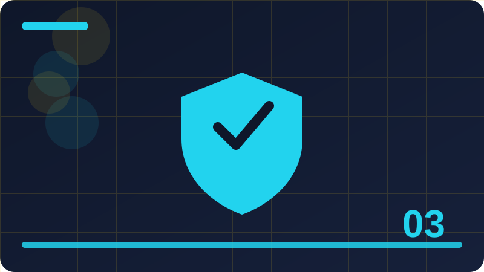

Chapter 3: Passwords Done Right

Section 1: What Makes a Password Strong
This section explains what makes a password strong in plain words, using everyday examples you can picture and steps you can actually try on your own devices and accounts. Your master password deserves special care, because it protects all the others. Make it long, made of words you can picture but that are not obvious to people who know you, and never reuse it anywhere else. Practise typing it until it feels natural, and store a written backup copy somewhere safe at home, not in your phone's notes or in a photo. If you forget a master password, recovery can be difficult by design, so a safe backup is part of using a manager responsibly, not an optional extra. Passphrases are passwords made from several words, and they are a friendly way to get length without pain. Four or five unrelated words, with a number or symbol added if a site requires it, can be both strong and memorable. Avoid famous phrases, song lyrics, and personal details such as a pet's name or a birthday, because attackers try those first. A passphrase like a random set of everyday objects is easier to type, easier to say to yourself, and much harder for a guessing program to predict than a short, complicated-looking string. Common passwords fail because attackers already know them. Lists of the most used passwords circulate widely, and programs try them first, along with names, dates, sports teams, and simple patterns on a keyboard. Changing a common password by adding a single digit at the end rarely helps, because attackers try those variations too. The test is simple: if a password feels obvious, familiar, or easy for someone who knows you to guess, it is not strong enough, even if it technically meets a site's minimum rules. Password length matters more than most people expect, because each extra character multiplies the number of guesses an attacker must try. A short password can be guessed quickly by a fast computer, while a long password may take far longer than is practical. This is why modern advice favours length over strange symbols: a twelve to sixteen character password, or a passphrase of four or more words, is a good target for important accounts. Do not chase perfection; a password you can actually use, and that is unique, beats a perfect password you keep forgetting. A small habit repeated every day protects you far more than one big effort made only once in a while. When you are unsure about a message, a link, or a request, pausing before you act is always the safer choice. Write down what you changed and why, so you can check it later and help someone else understand your decision. Good security feels ordinary most of the time, because it is built from simple steps done in the right order. If a step feels rushed or secretive, treat that feeling as useful information and slow down before you continue.
Check: In your own words, explain what makes a password strong and give one everyday example of it in action.
Section 2: Why Reusing Passwords Hurts You
This section explains why reusing passwords hurts you in plain words, using everyday examples you can picture and steps you can actually try on your own devices and accounts. Password length matters more than most people expect, because each extra character multiplies the number of guesses an attacker must try. A short password can be guessed quickly by a fast computer, while a long password may take far longer than is practical. This is why modern advice favours length over strange symbols: a twelve to sixteen character password, or a passphrase of four or more words, is a good target for important accounts. Do not chase perfection; a password you can actually use, and that is unique, beats a perfect password you keep forgetting. When a site offers to check whether your password has appeared in a known leak, that check can help, but never type your real password into a random website that promises to test it. Use the trusted checker built into your password manager or browser, or a well-known service, and change any password that is flagged as leaked. A leaked password is not a personal failure; leaks happen to large companies regularly. The important response is quick and calm: change that password, and change it anywhere else you reused it, starting with your email. Security questions are a weak point, because their answers are often public or easy to guess: a mother's maiden name, a first school, or a favourite colour. If a site forces you to set them, treat the answers like extra passwords: use answers that are not true and not guessable, store them in your password manager, and never share them. Better still, where a site lets you turn security questions off in favour of a second sign-in check, choose that option. Your goal is to remove guessable back doors from your accounts. Changing passwords on a fixed schedule, such as every month, is no longer recommended on its own, because it encourages small, predictable changes. Change a password promptly when there is a reason: a leak, a suspicious sign-in, a shared device, or a feeling that someone else may know it. Otherwise, a strong, unique password can stay in place while you focus on the protections that help more, such as a second sign-in check and keeping your devices updated. Change with purpose, not just with the calendar. A small habit repeated every day protects you far more than one big effort made only once in a while. When you are unsure about a message, a link, or a request, pausing before you act is always the safer choice. Write down what you changed and why, so you can check it later and help someone else understand your decision. Good security feels ordinary most of the time, because it is built from simple steps done in the right order. If a step feels rushed or secretive, treat that feeling as useful information and slow down before you continue.
Check: In your own words, explain why reusing passwords hurts you and give one everyday example of it in action.
Section 3: Password Managers in Plain Words
This section explains password managers in plain words in plain words, using everyday examples you can picture and steps you can actually try on your own devices and accounts. Changing passwords on a fixed schedule, such as every month, is no longer recommended on its own, because it encourages small, predictable changes. Change a password promptly when there is a reason: a leak, a suspicious sign-in, a shared device, or a feeling that someone else may know it. Otherwise, a strong, unique password can stay in place while you focus on the protections that help more, such as a second sign-in check and keeping your devices updated. Change with purpose, not just with the calendar. Sharing passwords is risky even with people you trust, because a shared secret is harder to control, harder to change, and may be stored insecurely by the other person. If a service must be shared, use its proper sharing feature, a family plan, or a password manager's sharing option where available, and change the password if the sharing ends. Never send a password by ordinary message, email, or a photo, and never ask someone else to send you theirs that way. A short awkward conversation now prevents a much harder problem later. Helping others with passwords is a kindness that needs care. Encourage a long passphrase, a password manager, and different passwords for important accounts, and never ask to see or hold someone else's passwords yourself. If you help an older relative or a friend set up a manager, let them choose and type their own master password, and help them store a safe backup they control. Good password habits spread best by example and patience, not by taking over someone else's accounts for them. A password is a secret that proves you are the owner of an account, and its strength depends mainly on length and unpredictability. A long password made of several unrelated words is usually stronger, and far easier to remember, than a short password with a few symbols forced into it. Attackers guess passwords using lists of common passwords, leaked passwords, and automatic programs that try millions of combinations. A password that is long, unique to one account, and not based on obvious personal details gives those programs very little to work with. A small habit repeated every day protects you far more than one big effort made only once in a while. When you are unsure about a message, a link, or a request, pausing before you act is always the safer choice. Write down what you changed and why, so you can check it later and help someone else understand your decision. Good security feels ordinary most of the time, because it is built from simple steps done in the right order. If a step feels rushed or secretive, treat that feeling as useful information and slow down before you continue. Share what you learn with family and friends, because a household that understands the basics is harder to trick.
Check: In your own words, explain password managers in plain words and give one everyday example of it in action.
Section 4: Your Master Password Deserves Extra Care
This section explains your master password deserves extra care in plain words, using everyday examples you can picture and steps you can actually try on your own devices and accounts. A password is a secret that proves you are the owner of an account, and its strength depends mainly on length and unpredictability. A long password made of several unrelated words is usually stronger, and far easier to remember, than a short password with a few symbols forced into it. Attackers guess passwords using lists of common passwords, leaked passwords, and automatic programs that try millions of combinations. A password that is long, unique to one account, and not based on obvious personal details gives those programs very little to work with. Reusing one password across many accounts is the single most common password mistake, because one leak can then open many doors. When a website is breached, its password list may be copied and tried against email, shopping, banking, and social accounts. If your password is different everywhere, a breach stays contained to that one account. This is why uniqueness matters as much as strength: a strong password that is reused is still a single key that fits many locks, and losing it is far more costly. A password manager is a tool that creates, stores, and fills in strong, different passwords for you, protected by one strong master password. This solves the memory problem honestly: nobody can memorise dozens of long, random passwords, and nobody should have to. Choose a reputable manager, protect it with a strong master password and a second sign-in check where offered, and let it generate passwords for new accounts. Writing passwords in an ordinary notebook is better than reusing one password, but a manager is safer, searchable, and easier to update. Your master password deserves special care, because it protects all the others. Make it long, made of words you can picture but that are not obvious to people who know you, and never reuse it anywhere else. Practise typing it until it feels natural, and store a written backup copy somewhere safe at home, not in your phone's notes or in a photo. If you forget a master password, recovery can be difficult by design, so a safe backup is part of using a manager responsibly, not an optional extra. A small habit repeated every day protects you far more than one big effort made only once in a while. When you are unsure about a message, a link, or a request, pausing before you act is always the safer choice. Write down what you changed and why, so you can check it later and help someone else understand your decision. Good security feels ordinary most of the time, because it is built from simple steps done in the right order. If a step feels rushed or secretive, treat that feeling as useful information and slow down before you continue. Share what you learn with family and friends, because a household that understands the basics is harder to trick.
Check: In your own words, explain your master password deserves extra care and give one everyday example of it in action.
Section 5: Passphrases: Long and Memorable
This section explains passphrases: long and memorable in plain words, using everyday examples you can picture and steps you can actually try on your own devices and accounts. Your master password deserves special care, because it protects all the others. Make it long, made of words you can picture but that are not obvious to people who know you, and never reuse it anywhere else. Practise typing it until it feels natural, and store a written backup copy somewhere safe at home, not in your phone's notes or in a photo. If you forget a master password, recovery can be difficult by design, so a safe backup is part of using a manager responsibly, not an optional extra. Passphrases are passwords made from several words, and they are a friendly way to get length without pain. Four or five unrelated words, with a number or symbol added if a site requires it, can be both strong and memorable. Avoid famous phrases, song lyrics, and personal details such as a pet's name or a birthday, because attackers try those first. A passphrase like a random set of everyday objects is easier to type, easier to say to yourself, and much harder for a guessing program to predict than a short, complicated-looking string. Common passwords fail because attackers already know them. Lists of the most used passwords circulate widely, and programs try them first, along with names, dates, sports teams, and simple patterns on a keyboard. Changing a common password by adding a single digit at the end rarely helps, because attackers try those variations too. The test is simple: if a password feels obvious, familiar, or easy for someone who knows you to guess, it is not strong enough, even if it technically meets a site's minimum rules. Password length matters more than most people expect, because each extra character multiplies the number of guesses an attacker must try. A short password can be guessed quickly by a fast computer, while a long password may take far longer than is practical. This is why modern advice favours length over strange symbols: a twelve to sixteen character password, or a passphrase of four or more words, is a good target for important accounts. Do not chase perfection; a password you can actually use, and that is unique, beats a perfect password you keep forgetting. A small habit repeated every day protects you far more than one big effort made only once in a while. When you are unsure about a message, a link, or a request, pausing before you act is always the safer choice. Write down what you changed and why, so you can check it later and help someone else understand your decision. Good security feels ordinary most of the time, because it is built from simple steps done in the right order. If a step feels rushed or secretive, treat that feeling as useful information and slow down before you continue.
def password_score(password):
score = 0
if len(password) >= 12: score += 2
if len(password) >= 16: score += 1
if any(c.isupper() for c in password): score += 1
if any(c.islower() for c in password): score += 1
if any(c.isdigit() for c in password): score += 1
if any(not c.isalnum() for c in password): score += 1
return score
# Type a test password yourself; never paste a real one into shared code.
print(password_score('river-table-window-9'))Check: In your own words, explain passphrases: long and memorable and give one everyday example of it in action.
Section 6: Why Common Passwords Fail
This section explains why common passwords fail in plain words, using everyday examples you can picture and steps you can actually try on your own devices and accounts. Password length matters more than most people expect, because each extra character multiplies the number of guesses an attacker must try. A short password can be guessed quickly by a fast computer, while a long password may take far longer than is practical. This is why modern advice favours length over strange symbols: a twelve to sixteen character password, or a passphrase of four or more words, is a good target for important accounts. Do not chase perfection; a password you can actually use, and that is unique, beats a perfect password you keep forgetting. When a site offers to check whether your password has appeared in a known leak, that check can help, but never type your real password into a random website that promises to test it. Use the trusted checker built into your password manager or browser, or a well-known service, and change any password that is flagged as leaked. A leaked password is not a personal failure; leaks happen to large companies regularly. The important response is quick and calm: change that password, and change it anywhere else you reused it, starting with your email. Security questions are a weak point, because their answers are often public or easy to guess: a mother's maiden name, a first school, or a favourite colour. If a site forces you to set them, treat the answers like extra passwords: use answers that are not true and not guessable, store them in your password manager, and never share them. Better still, where a site lets you turn security questions off in favour of a second sign-in check, choose that option. Your goal is to remove guessable back doors from your accounts. Changing passwords on a fixed schedule, such as every month, is no longer recommended on its own, because it encourages small, predictable changes. Change a password promptly when there is a reason: a leak, a suspicious sign-in, a shared device, or a feeling that someone else may know it. Otherwise, a strong, unique password can stay in place while you focus on the protections that help more, such as a second sign-in check and keeping your devices updated. Change with purpose, not just with the calendar. A small habit repeated every day protects you far more than one big effort made only once in a while. When you are unsure about a message, a link, or a request, pausing before you act is always the safer choice. Write down what you changed and why, so you can check it later and help someone else understand your decision. Good security feels ordinary most of the time, because it is built from simple steps done in the right order. If a step feels rushed or secretive, treat that feeling as useful information and slow down before you continue.
Check: In your own words, explain why common passwords fail and give one everyday example of it in action.
Section 7: Length Beats Clever Symbols
This section explains length beats clever symbols in plain words, using everyday examples you can picture and steps you can actually try on your own devices and accounts. Changing passwords on a fixed schedule, such as every month, is no longer recommended on its own, because it encourages small, predictable changes. Change a password promptly when there is a reason: a leak, a suspicious sign-in, a shared device, or a feeling that someone else may know it. Otherwise, a strong, unique password can stay in place while you focus on the protections that help more, such as a second sign-in check and keeping your devices updated. Change with purpose, not just with the calendar. Sharing passwords is risky even with people you trust, because a shared secret is harder to control, harder to change, and may be stored insecurely by the other person. If a service must be shared, use its proper sharing feature, a family plan, or a password manager's sharing option where available, and change the password if the sharing ends. Never send a password by ordinary message, email, or a photo, and never ask someone else to send you theirs that way. A short awkward conversation now prevents a much harder problem later. Helping others with passwords is a kindness that needs care. Encourage a long passphrase, a password manager, and different passwords for important accounts, and never ask to see or hold someone else's passwords yourself. If you help an older relative or a friend set up a manager, let them choose and type their own master password, and help them store a safe backup they control. Good password habits spread best by example and patience, not by taking over someone else's accounts for them. A password is a secret that proves you are the owner of an account, and its strength depends mainly on length and unpredictability. A long password made of several unrelated words is usually stronger, and far easier to remember, than a short password with a few symbols forced into it. Attackers guess passwords using lists of common passwords, leaked passwords, and automatic programs that try millions of combinations. A password that is long, unique to one account, and not based on obvious personal details gives those programs very little to work with. A small habit repeated every day protects you far more than one big effort made only once in a while. When you are unsure about a message, a link, or a request, pausing before you act is always the safer choice. Write down what you changed and why, so you can check it later and help someone else understand your decision. Good security feels ordinary most of the time, because it is built from simple steps done in the right order. If a step feels rushed or secretive, treat that feeling as useful information and slow down before you continue. Share what you learn with family and friends, because a household that understands the basics is harder to trick.
Check: In your own words, explain length beats clever symbols and give one everyday example of it in action.
Section 8: What to Do After a Password Leak
This section explains what to do after a password leak in plain words, using everyday examples you can picture and steps you can actually try on your own devices and accounts. A password is a secret that proves you are the owner of an account, and its strength depends mainly on length and unpredictability. A long password made of several unrelated words is usually stronger, and far easier to remember, than a short password with a few symbols forced into it. Attackers guess passwords using lists of common passwords, leaked passwords, and automatic programs that try millions of combinations. A password that is long, unique to one account, and not based on obvious personal details gives those programs very little to work with. Reusing one password across many accounts is the single most common password mistake, because one leak can then open many doors. When a website is breached, its password list may be copied and tried against email, shopping, banking, and social accounts. If your password is different everywhere, a breach stays contained to that one account. This is why uniqueness matters as much as strength: a strong password that is reused is still a single key that fits many locks, and losing it is far more costly. A password manager is a tool that creates, stores, and fills in strong, different passwords for you, protected by one strong master password. This solves the memory problem honestly: nobody can memorise dozens of long, random passwords, and nobody should have to. Choose a reputable manager, protect it with a strong master password and a second sign-in check where offered, and let it generate passwords for new accounts. Writing passwords in an ordinary notebook is better than reusing one password, but a manager is safer, searchable, and easier to update. Your master password deserves special care, because it protects all the others. Make it long, made of words you can picture but that are not obvious to people who know you, and never reuse it anywhere else. Practise typing it until it feels natural, and store a written backup copy somewhere safe at home, not in your phone's notes or in a photo. If you forget a master password, recovery can be difficult by design, so a safe backup is part of using a manager responsibly, not an optional extra. A small habit repeated every day protects you far more than one big effort made only once in a while. When you are unsure about a message, a link, or a request, pausing before you act is always the safer choice. Write down what you changed and why, so you can check it later and help someone else understand your decision. Good security feels ordinary most of the time, because it is built from simple steps done in the right order. If a step feels rushed or secretive, treat that feeling as useful information and slow down before you continue. Share what you learn with family and friends, because a household that understands the basics is harder to trick.
Check: In your own words, explain what to do after a password leak and give one everyday example of it in action.
Section 9: Security Questions Are a Weak Back Door
This section explains security questions are a weak back door in plain words, using everyday examples you can picture and steps you can actually try on your own devices and accounts. Your master password deserves special care, because it protects all the others. Make it long, made of words you can picture but that are not obvious to people who know you, and never reuse it anywhere else. Practise typing it until it feels natural, and store a written backup copy somewhere safe at home, not in your phone's notes or in a photo. If you forget a master password, recovery can be difficult by design, so a safe backup is part of using a manager responsibly, not an optional extra. Passphrases are passwords made from several words, and they are a friendly way to get length without pain. Four or five unrelated words, with a number or symbol added if a site requires it, can be both strong and memorable. Avoid famous phrases, song lyrics, and personal details such as a pet's name or a birthday, because attackers try those first. A passphrase like a random set of everyday objects is easier to type, easier to say to yourself, and much harder for a guessing program to predict than a short, complicated-looking string. Common passwords fail because attackers already know them. Lists of the most used passwords circulate widely, and programs try them first, along with names, dates, sports teams, and simple patterns on a keyboard. Changing a common password by adding a single digit at the end rarely helps, because attackers try those variations too. The test is simple: if a password feels obvious, familiar, or easy for someone who knows you to guess, it is not strong enough, even if it technically meets a site's minimum rules. Password length matters more than most people expect, because each extra character multiplies the number of guesses an attacker must try. A short password can be guessed quickly by a fast computer, while a long password may take far longer than is practical. This is why modern advice favours length over strange symbols: a twelve to sixteen character password, or a passphrase of four or more words, is a good target for important accounts. Do not chase perfection; a password you can actually use, and that is unique, beats a perfect password you keep forgetting. A small habit repeated every day protects you far more than one big effort made only once in a while. When you are unsure about a message, a link, or a request, pausing before you act is always the safer choice. Write down what you changed and why, so you can check it later and help someone else understand your decision. Good security feels ordinary most of the time, because it is built from simple steps done in the right order. If a step feels rushed or secretive, treat that feeling as useful information and slow down before you continue.
Check: In your own words, explain security questions are a weak back door and give one everyday example of it in action.
Section 10: When Should You Change a Password
This section explains when should you change a password in plain words, using everyday examples you can picture and steps you can actually try on your own devices and accounts. Password length matters more than most people expect, because each extra character multiplies the number of guesses an attacker must try. A short password can be guessed quickly by a fast computer, while a long password may take far longer than is practical. This is why modern advice favours length over strange symbols: a twelve to sixteen character password, or a passphrase of four or more words, is a good target for important accounts. Do not chase perfection; a password you can actually use, and that is unique, beats a perfect password you keep forgetting. When a site offers to check whether your password has appeared in a known leak, that check can help, but never type your real password into a random website that promises to test it. Use the trusted checker built into your password manager or browser, or a well-known service, and change any password that is flagged as leaked. A leaked password is not a personal failure; leaks happen to large companies regularly. The important response is quick and calm: change that password, and change it anywhere else you reused it, starting with your email. Security questions are a weak point, because their answers are often public or easy to guess: a mother's maiden name, a first school, or a favourite colour. If a site forces you to set them, treat the answers like extra passwords: use answers that are not true and not guessable, store them in your password manager, and never share them. Better still, where a site lets you turn security questions off in favour of a second sign-in check, choose that option. Your goal is to remove guessable back doors from your accounts. Changing passwords on a fixed schedule, such as every month, is no longer recommended on its own, because it encourages small, predictable changes. Change a password promptly when there is a reason: a leak, a suspicious sign-in, a shared device, or a feeling that someone else may know it. Otherwise, a strong, unique password can stay in place while you focus on the protections that help more, such as a second sign-in check and keeping your devices updated. Change with purpose, not just with the calendar. A small habit repeated every day protects you far more than one big effort made only once in a while. When you are unsure about a message, a link, or a request, pausing before you act is always the safer choice. Write down what you changed and why, so you can check it later and help someone else understand your decision. Good security feels ordinary most of the time, because it is built from simple steps done in the right order. If a step feels rushed or secretive, treat that feeling as useful information and slow down before you continue.
Check: In your own words, explain when should you change a password and give one everyday example of it in action.
Section 11: Sharing Passwords Safely, or Not at All
This section explains sharing passwords safely, or not at all in plain words, using everyday examples you can picture and steps you can actually try on your own devices and accounts. Changing passwords on a fixed schedule, such as every month, is no longer recommended on its own, because it encourages small, predictable changes. Change a password promptly when there is a reason: a leak, a suspicious sign-in, a shared device, or a feeling that someone else may know it. Otherwise, a strong, unique password can stay in place while you focus on the protections that help more, such as a second sign-in check and keeping your devices updated. Change with purpose, not just with the calendar. Sharing passwords is risky even with people you trust, because a shared secret is harder to control, harder to change, and may be stored insecurely by the other person. If a service must be shared, use its proper sharing feature, a family plan, or a password manager's sharing option where available, and change the password if the sharing ends. Never send a password by ordinary message, email, or a photo, and never ask someone else to send you theirs that way. A short awkward conversation now prevents a much harder problem later. Helping others with passwords is a kindness that needs care. Encourage a long passphrase, a password manager, and different passwords for important accounts, and never ask to see or hold someone else's passwords yourself. If you help an older relative or a friend set up a manager, let them choose and type their own master password, and help them store a safe backup they control. Good password habits spread best by example and patience, not by taking over someone else's accounts for them. A password is a secret that proves you are the owner of an account, and its strength depends mainly on length and unpredictability. A long password made of several unrelated words is usually stronger, and far easier to remember, than a short password with a few symbols forced into it. Attackers guess passwords using lists of common passwords, leaked passwords, and automatic programs that try millions of combinations. A password that is long, unique to one account, and not based on obvious personal details gives those programs very little to work with. A small habit repeated every day protects you far more than one big effort made only once in a while. When you are unsure about a message, a link, or a request, pausing before you act is always the safer choice. Write down what you changed and why, so you can check it later and help someone else understand your decision. Good security feels ordinary most of the time, because it is built from simple steps done in the right order. If a step feels rushed or secretive, treat that feeling as useful information and slow down before you continue. Share what you learn with family and friends, because a household that understands the basics is harder to trick.
Check: In your own words, explain sharing passwords safely, or not at all and give one everyday example of it in action.
Section 12: Helping Others with Passwords
This section explains helping others with passwords in plain words, using everyday examples you can picture and steps you can actually try on your own devices and accounts. A password is a secret that proves you are the owner of an account, and its strength depends mainly on length and unpredictability. A long password made of several unrelated words is usually stronger, and far easier to remember, than a short password with a few symbols forced into it. Attackers guess passwords using lists of common passwords, leaked passwords, and automatic programs that try millions of combinations. A password that is long, unique to one account, and not based on obvious personal details gives those programs very little to work with. Reusing one password across many accounts is the single most common password mistake, because one leak can then open many doors. When a website is breached, its password list may be copied and tried against email, shopping, banking, and social accounts. If your password is different everywhere, a breach stays contained to that one account. This is why uniqueness matters as much as strength: a strong password that is reused is still a single key that fits many locks, and losing it is far more costly. A password manager is a tool that creates, stores, and fills in strong, different passwords for you, protected by one strong master password. This solves the memory problem honestly: nobody can memorise dozens of long, random passwords, and nobody should have to. Choose a reputable manager, protect it with a strong master password and a second sign-in check where offered, and let it generate passwords for new accounts. Writing passwords in an ordinary notebook is better than reusing one password, but a manager is safer, searchable, and easier to update. Your master password deserves special care, because it protects all the others. Make it long, made of words you can picture but that are not obvious to people who know you, and never reuse it anywhere else. Practise typing it until it feels natural, and store a written backup copy somewhere safe at home, not in your phone's notes or in a photo. If you forget a master password, recovery can be difficult by design, so a safe backup is part of using a manager responsibly, not an optional extra. A small habit repeated every day protects you far more than one big effort made only once in a while. When you are unsure about a message, a link, or a request, pausing before you act is always the safer choice. Write down what you changed and why, so you can check it later and help someone else understand your decision. Good security feels ordinary most of the time, because it is built from simple steps done in the right order. If a step feels rushed or secretive, treat that feeling as useful information and slow down before you continue. Share what you learn with family and friends, because a household that understands the basics is harder to trick.
Check: In your own words, explain helping others with passwords and give one everyday example of it in action.
Section 13: Passwords on Shared Computers
This section explains passwords on shared computers in plain words, using everyday examples you can picture and steps you can actually try on your own devices and accounts. Your master password deserves special care, because it protects all the others. Make it long, made of words you can picture but that are not obvious to people who know you, and never reuse it anywhere else. Practise typing it until it feels natural, and store a written backup copy somewhere safe at home, not in your phone's notes or in a photo. If you forget a master password, recovery can be difficult by design, so a safe backup is part of using a manager responsibly, not an optional extra. Passphrases are passwords made from several words, and they are a friendly way to get length without pain. Four or five unrelated words, with a number or symbol added if a site requires it, can be both strong and memorable. Avoid famous phrases, song lyrics, and personal details such as a pet's name or a birthday, because attackers try those first. A passphrase like a random set of everyday objects is easier to type, easier to say to yourself, and much harder for a guessing program to predict than a short, complicated-looking string. Common passwords fail because attackers already know them. Lists of the most used passwords circulate widely, and programs try them first, along with names, dates, sports teams, and simple patterns on a keyboard. Changing a common password by adding a single digit at the end rarely helps, because attackers try those variations too. The test is simple: if a password feels obvious, familiar, or easy for someone who knows you to guess, it is not strong enough, even if it technically meets a site's minimum rules. Password length matters more than most people expect, because each extra character multiplies the number of guesses an attacker must try. A short password can be guessed quickly by a fast computer, while a long password may take far longer than is practical. This is why modern advice favours length over strange symbols: a twelve to sixteen character password, or a passphrase of four or more words, is a good target for important accounts. Do not chase perfection; a password you can actually use, and that is unique, beats a perfect password you keep forgetting. A small habit repeated every day protects you far more than one big effort made only once in a while. When you are unsure about a message, a link, or a request, pausing before you act is always the safer choice. Write down what you changed and why, so you can check it later and help someone else understand your decision. Good security feels ordinary most of the time, because it is built from simple steps done in the right order. If a step feels rushed or secretive, treat that feeling as useful information and slow down before you continue.
Check: In your own words, explain passwords on shared computers and give one everyday example of it in action.
Section 14: Passwords on Your Phone
This section explains passwords on your phone in plain words, using everyday examples you can picture and steps you can actually try on your own devices and accounts. Password length matters more than most people expect, because each extra character multiplies the number of guesses an attacker must try. A short password can be guessed quickly by a fast computer, while a long password may take far longer than is practical. This is why modern advice favours length over strange symbols: a twelve to sixteen character password, or a passphrase of four or more words, is a good target for important accounts. Do not chase perfection; a password you can actually use, and that is unique, beats a perfect password you keep forgetting. When a site offers to check whether your password has appeared in a known leak, that check can help, but never type your real password into a random website that promises to test it. Use the trusted checker built into your password manager or browser, or a well-known service, and change any password that is flagged as leaked. A leaked password is not a personal failure; leaks happen to large companies regularly. The important response is quick and calm: change that password, and change it anywhere else you reused it, starting with your email. Security questions are a weak point, because their answers are often public or easy to guess: a mother's maiden name, a first school, or a favourite colour. If a site forces you to set them, treat the answers like extra passwords: use answers that are not true and not guessable, store them in your password manager, and never share them. Better still, where a site lets you turn security questions off in favour of a second sign-in check, choose that option. Your goal is to remove guessable back doors from your accounts. Changing passwords on a fixed schedule, such as every month, is no longer recommended on its own, because it encourages small, predictable changes. Change a password promptly when there is a reason: a leak, a suspicious sign-in, a shared device, or a feeling that someone else may know it. Otherwise, a strong, unique password can stay in place while you focus on the protections that help more, such as a second sign-in check and keeping your devices updated. Change with purpose, not just with the calendar. A small habit repeated every day protects you far more than one big effort made only once in a while. When you are unsure about a message, a link, or a request, pausing before you act is always the safer choice. Write down what you changed and why, so you can check it later and help someone else understand your decision. Good security feels ordinary most of the time, because it is built from simple steps done in the right order. If a step feels rushed or secretive, treat that feeling as useful information and slow down before you continue.
Check: In your own words, explain passwords on your phone and give one everyday example of it in action.
Section 15: What Your Browser Saves, and Its Limits
This section explains what your browser saves, and its limits in plain words, using everyday examples you can picture and steps you can actually try on your own devices and accounts. Changing passwords on a fixed schedule, such as every month, is no longer recommended on its own, because it encourages small, predictable changes. Change a password promptly when there is a reason: a leak, a suspicious sign-in, a shared device, or a feeling that someone else may know it. Otherwise, a strong, unique password can stay in place while you focus on the protections that help more, such as a second sign-in check and keeping your devices updated. Change with purpose, not just with the calendar. Sharing passwords is risky even with people you trust, because a shared secret is harder to control, harder to change, and may be stored insecurely by the other person. If a service must be shared, use its proper sharing feature, a family plan, or a password manager's sharing option where available, and change the password if the sharing ends. Never send a password by ordinary message, email, or a photo, and never ask someone else to send you theirs that way. A short awkward conversation now prevents a much harder problem later. Helping others with passwords is a kindness that needs care. Encourage a long passphrase, a password manager, and different passwords for important accounts, and never ask to see or hold someone else's passwords yourself. If you help an older relative or a friend set up a manager, let them choose and type their own master password, and help them store a safe backup they control. Good password habits spread best by example and patience, not by taking over someone else's accounts for them. A password is a secret that proves you are the owner of an account, and its strength depends mainly on length and unpredictability. A long password made of several unrelated words is usually stronger, and far easier to remember, than a short password with a few symbols forced into it. Attackers guess passwords using lists of common passwords, leaked passwords, and automatic programs that try millions of combinations. A password that is long, unique to one account, and not based on obvious personal details gives those programs very little to work with. A small habit repeated every day protects you far more than one big effort made only once in a while. When you are unsure about a message, a link, or a request, pausing before you act is always the safer choice. Write down what you changed and why, so you can check it later and help someone else understand your decision. Good security feels ordinary most of the time, because it is built from simple steps done in the right order. If a step feels rushed or secretive, treat that feeling as useful information and slow down before you continue. Share what you learn with family and friends, because a household that understands the basics is harder to trick.
def find_reuse(accounts):
seen = {}
for name, password in accounts.items():
seen.setdefault(password, []).append(name)
for password, names in seen.items():
if len(names) > 1:
print('Change the password reused on:', ', '.join(names))
find_reuse({'mail': 'test-a', 'shop': 'test-a', 'bank': 'test-b'})Check: In your own words, explain what your browser saves, and its limits and give one everyday example of it in action.
Section 16: Creating a Password You Can Remember
This section explains creating a password you can remember in plain words, using everyday examples you can picture and steps you can actually try on your own devices and accounts. A password is a secret that proves you are the owner of an account, and its strength depends mainly on length and unpredictability. A long password made of several unrelated words is usually stronger, and far easier to remember, than a short password with a few symbols forced into it. Attackers guess passwords using lists of common passwords, leaked passwords, and automatic programs that try millions of combinations. A password that is long, unique to one account, and not based on obvious personal details gives those programs very little to work with. Reusing one password across many accounts is the single most common password mistake, because one leak can then open many doors. When a website is breached, its password list may be copied and tried against email, shopping, banking, and social accounts. If your password is different everywhere, a breach stays contained to that one account. This is why uniqueness matters as much as strength: a strong password that is reused is still a single key that fits many locks, and losing it is far more costly. A password manager is a tool that creates, stores, and fills in strong, different passwords for you, protected by one strong master password. This solves the memory problem honestly: nobody can memorise dozens of long, random passwords, and nobody should have to. Choose a reputable manager, protect it with a strong master password and a second sign-in check where offered, and let it generate passwords for new accounts. Writing passwords in an ordinary notebook is better than reusing one password, but a manager is safer, searchable, and easier to update. Your master password deserves special care, because it protects all the others. Make it long, made of words you can picture but that are not obvious to people who know you, and never reuse it anywhere else. Practise typing it until it feels natural, and store a written backup copy somewhere safe at home, not in your phone's notes or in a photo. If you forget a master password, recovery can be difficult by design, so a safe backup is part of using a manager responsibly, not an optional extra. A small habit repeated every day protects you far more than one big effort made only once in a while. When you are unsure about a message, a link, or a request, pausing before you act is always the safer choice. Write down what you changed and why, so you can check it later and help someone else understand your decision. Good security feels ordinary most of the time, because it is built from simple steps done in the right order. If a step feels rushed or secretive, treat that feeling as useful information and slow down before you continue. Share what you learn with family and friends, because a household that understands the basics is harder to trick.
Check: In your own words, explain creating a password you can remember and give one everyday example of it in action.
Section 17: Passwords for Email First
This section explains passwords for email first in plain words, using everyday examples you can picture and steps you can actually try on your own devices and accounts. Your master password deserves special care, because it protects all the others. Make it long, made of words you can picture but that are not obvious to people who know you, and never reuse it anywhere else. Practise typing it until it feels natural, and store a written backup copy somewhere safe at home, not in your phone's notes or in a photo. If you forget a master password, recovery can be difficult by design, so a safe backup is part of using a manager responsibly, not an optional extra. Passphrases are passwords made from several words, and they are a friendly way to get length without pain. Four or five unrelated words, with a number or symbol added if a site requires it, can be both strong and memorable. Avoid famous phrases, song lyrics, and personal details such as a pet's name or a birthday, because attackers try those first. A passphrase like a random set of everyday objects is easier to type, easier to say to yourself, and much harder for a guessing program to predict than a short, complicated-looking string. Common passwords fail because attackers already know them. Lists of the most used passwords circulate widely, and programs try them first, along with names, dates, sports teams, and simple patterns on a keyboard. Changing a common password by adding a single digit at the end rarely helps, because attackers try those variations too. The test is simple: if a password feels obvious, familiar, or easy for someone who knows you to guess, it is not strong enough, even if it technically meets a site's minimum rules. Password length matters more than most people expect, because each extra character multiplies the number of guesses an attacker must try. A short password can be guessed quickly by a fast computer, while a long password may take far longer than is practical. This is why modern advice favours length over strange symbols: a twelve to sixteen character password, or a passphrase of four or more words, is a good target for important accounts. Do not chase perfection; a password you can actually use, and that is unique, beats a perfect password you keep forgetting. A small habit repeated every day protects you far more than one big effort made only once in a while. When you are unsure about a message, a link, or a request, pausing before you act is always the safer choice. Write down what you changed and why, so you can check it later and help someone else understand your decision. Good security feels ordinary most of the time, because it is built from simple steps done in the right order. If a step feels rushed or secretive, treat that feeling as useful information and slow down before you continue.
Check: In your own words, explain passwords for email first and give one everyday example of it in action.
Section 18: Passwords for Banking and Money
This section explains passwords for banking and money in plain words, using everyday examples you can picture and steps you can actually try on your own devices and accounts. Password length matters more than most people expect, because each extra character multiplies the number of guesses an attacker must try. A short password can be guessed quickly by a fast computer, while a long password may take far longer than is practical. This is why modern advice favours length over strange symbols: a twelve to sixteen character password, or a passphrase of four or more words, is a good target for important accounts. Do not chase perfection; a password you can actually use, and that is unique, beats a perfect password you keep forgetting. When a site offers to check whether your password has appeared in a known leak, that check can help, but never type your real password into a random website that promises to test it. Use the trusted checker built into your password manager or browser, or a well-known service, and change any password that is flagged as leaked. A leaked password is not a personal failure; leaks happen to large companies regularly. The important response is quick and calm: change that password, and change it anywhere else you reused it, starting with your email. Security questions are a weak point, because their answers are often public or easy to guess: a mother's maiden name, a first school, or a favourite colour. If a site forces you to set them, treat the answers like extra passwords: use answers that are not true and not guessable, store them in your password manager, and never share them. Better still, where a site lets you turn security questions off in favour of a second sign-in check, choose that option. Your goal is to remove guessable back doors from your accounts. Changing passwords on a fixed schedule, such as every month, is no longer recommended on its own, because it encourages small, predictable changes. Change a password promptly when there is a reason: a leak, a suspicious sign-in, a shared device, or a feeling that someone else may know it. Otherwise, a strong, unique password can stay in place while you focus on the protections that help more, such as a second sign-in check and keeping your devices updated. Change with purpose, not just with the calendar. A small habit repeated every day protects you far more than one big effort made only once in a while. When you are unsure about a message, a link, or a request, pausing before you act is always the safer choice. Write down what you changed and why, so you can check it later and help someone else understand your decision. Good security feels ordinary most of the time, because it is built from simple steps done in the right order. If a step feels rushed or secretive, treat that feeling as useful information and slow down before you continue.
Check: In your own words, explain passwords for banking and money and give one everyday example of it in action.
Section 19: Passwords for Social Accounts
This section explains passwords for social accounts in plain words, using everyday examples you can picture and steps you can actually try on your own devices and accounts. Changing passwords on a fixed schedule, such as every month, is no longer recommended on its own, because it encourages small, predictable changes. Change a password promptly when there is a reason: a leak, a suspicious sign-in, a shared device, or a feeling that someone else may know it. Otherwise, a strong, unique password can stay in place while you focus on the protections that help more, such as a second sign-in check and keeping your devices updated. Change with purpose, not just with the calendar. Sharing passwords is risky even with people you trust, because a shared secret is harder to control, harder to change, and may be stored insecurely by the other person. If a service must be shared, use its proper sharing feature, a family plan, or a password manager's sharing option where available, and change the password if the sharing ends. Never send a password by ordinary message, email, or a photo, and never ask someone else to send you theirs that way. A short awkward conversation now prevents a much harder problem later. Helping others with passwords is a kindness that needs care. Encourage a long passphrase, a password manager, and different passwords for important accounts, and never ask to see or hold someone else's passwords yourself. If you help an older relative or a friend set up a manager, let them choose and type their own master password, and help them store a safe backup they control. Good password habits spread best by example and patience, not by taking over someone else's accounts for them. A password is a secret that proves you are the owner of an account, and its strength depends mainly on length and unpredictability. A long password made of several unrelated words is usually stronger, and far easier to remember, than a short password with a few symbols forced into it. Attackers guess passwords using lists of common passwords, leaked passwords, and automatic programs that try millions of combinations. A password that is long, unique to one account, and not based on obvious personal details gives those programs very little to work with. A small habit repeated every day protects you far more than one big effort made only once in a while. When you are unsure about a message, a link, or a request, pausing before you act is always the safer choice. Write down what you changed and why, so you can check it later and help someone else understand your decision. Good security feels ordinary most of the time, because it is built from simple steps done in the right order. If a step feels rushed or secretive, treat that feeling as useful information and slow down before you continue. Share what you learn with family and friends, because a household that understands the basics is harder to trick.
Check: In your own words, explain passwords for social accounts and give one everyday example of it in action.
Section 20: Passwords for Work Accounts
This section explains passwords for work accounts in plain words, using everyday examples you can picture and steps you can actually try on your own devices and accounts. A password is a secret that proves you are the owner of an account, and its strength depends mainly on length and unpredictability. A long password made of several unrelated words is usually stronger, and far easier to remember, than a short password with a few symbols forced into it. Attackers guess passwords using lists of common passwords, leaked passwords, and automatic programs that try millions of combinations. A password that is long, unique to one account, and not based on obvious personal details gives those programs very little to work with. Reusing one password across many accounts is the single most common password mistake, because one leak can then open many doors. When a website is breached, its password list may be copied and tried against email, shopping, banking, and social accounts. If your password is different everywhere, a breach stays contained to that one account. This is why uniqueness matters as much as strength: a strong password that is reused is still a single key that fits many locks, and losing it is far more costly. A password manager is a tool that creates, stores, and fills in strong, different passwords for you, protected by one strong master password. This solves the memory problem honestly: nobody can memorise dozens of long, random passwords, and nobody should have to. Choose a reputable manager, protect it with a strong master password and a second sign-in check where offered, and let it generate passwords for new accounts. Writing passwords in an ordinary notebook is better than reusing one password, but a manager is safer, searchable, and easier to update. Your master password deserves special care, because it protects all the others. Make it long, made of words you can picture but that are not obvious to people who know you, and never reuse it anywhere else. Practise typing it until it feels natural, and store a written backup copy somewhere safe at home, not in your phone's notes or in a photo. If you forget a master password, recovery can be difficult by design, so a safe backup is part of using a manager responsibly, not an optional extra. A small habit repeated every day protects you far more than one big effort made only once in a while. When you are unsure about a message, a link, or a request, pausing before you act is always the safer choice. Write down what you changed and why, so you can check it later and help someone else understand your decision. Good security feels ordinary most of the time, because it is built from simple steps done in the right order. If a step feels rushed or secretive, treat that feeling as useful information and slow down before you continue. Share what you learn with family and friends, because a household that understands the basics is harder to trick.
Check: In your own words, explain passwords for work accounts and give one everyday example of it in action.
Section 21: What to Do If You Forget a Password
This section explains what to do if you forget a password in plain words, using everyday examples you can picture and steps you can actually try on your own devices and accounts. Your master password deserves special care, because it protects all the others. Make it long, made of words you can picture but that are not obvious to people who know you, and never reuse it anywhere else. Practise typing it until it feels natural, and store a written backup copy somewhere safe at home, not in your phone's notes or in a photo. If you forget a master password, recovery can be difficult by design, so a safe backup is part of using a manager responsibly, not an optional extra. Passphrases are passwords made from several words, and they are a friendly way to get length without pain. Four or five unrelated words, with a number or symbol added if a site requires it, can be both strong and memorable. Avoid famous phrases, song lyrics, and personal details such as a pet's name or a birthday, because attackers try those first. A passphrase like a random set of everyday objects is easier to type, easier to say to yourself, and much harder for a guessing program to predict than a short, complicated-looking string. Common passwords fail because attackers already know them. Lists of the most used passwords circulate widely, and programs try them first, along with names, dates, sports teams, and simple patterns on a keyboard. Changing a common password by adding a single digit at the end rarely helps, because attackers try those variations too. The test is simple: if a password feels obvious, familiar, or easy for someone who knows you to guess, it is not strong enough, even if it technically meets a site's minimum rules. Password length matters more than most people expect, because each extra character multiplies the number of guesses an attacker must try. A short password can be guessed quickly by a fast computer, while a long password may take far longer than is practical. This is why modern advice favours length over strange symbols: a twelve to sixteen character password, or a passphrase of four or more words, is a good target for important accounts. Do not chase perfection; a password you can actually use, and that is unique, beats a perfect password you keep forgetting. A small habit repeated every day protects you far more than one big effort made only once in a while. When you are unsure about a message, a link, or a request, pausing before you act is always the safer choice. Write down what you changed and why, so you can check it later and help someone else understand your decision. Good security feels ordinary most of the time, because it is built from simple steps done in the right order. If a step feels rushed or secretive, treat that feeling as useful information and slow down before you continue.
Check: In your own words, explain what to do if you forget a password and give one everyday example of it in action.
Section 22: Reset Links: Checking Before You Click
This section explains reset links: checking before you click in plain words, using everyday examples you can picture and steps you can actually try on your own devices and accounts. Password length matters more than most people expect, because each extra character multiplies the number of guesses an attacker must try. A short password can be guessed quickly by a fast computer, while a long password may take far longer than is practical. This is why modern advice favours length over strange symbols: a twelve to sixteen character password, or a passphrase of four or more words, is a good target for important accounts. Do not chase perfection; a password you can actually use, and that is unique, beats a perfect password you keep forgetting. When a site offers to check whether your password has appeared in a known leak, that check can help, but never type your real password into a random website that promises to test it. Use the trusted checker built into your password manager or browser, or a well-known service, and change any password that is flagged as leaked. A leaked password is not a personal failure; leaks happen to large companies regularly. The important response is quick and calm: change that password, and change it anywhere else you reused it, starting with your email. Security questions are a weak point, because their answers are often public or easy to guess: a mother's maiden name, a first school, or a favourite colour. If a site forces you to set them, treat the answers like extra passwords: use answers that are not true and not guessable, store them in your password manager, and never share them. Better still, where a site lets you turn security questions off in favour of a second sign-in check, choose that option. Your goal is to remove guessable back doors from your accounts. Changing passwords on a fixed schedule, such as every month, is no longer recommended on its own, because it encourages small, predictable changes. Change a password promptly when there is a reason: a leak, a suspicious sign-in, a shared device, or a feeling that someone else may know it. Otherwise, a strong, unique password can stay in place while you focus on the protections that help more, such as a second sign-in check and keeping your devices updated. Change with purpose, not just with the calendar. A small habit repeated every day protects you far more than one big effort made only once in a while. When you are unsure about a message, a link, or a request, pausing before you act is always the safer choice. Write down what you changed and why, so you can check it later and help someone else understand your decision. Good security feels ordinary most of the time, because it is built from simple steps done in the right order. If a step feels rushed or secretive, treat that feeling as useful information and slow down before you continue.
Check: In your own words, explain reset links: checking before you click and give one everyday example of it in action.
Section 23: Fake Password Reset Messages
This section explains fake password reset messages in plain words, using everyday examples you can picture and steps you can actually try on your own devices and accounts. Changing passwords on a fixed schedule, such as every month, is no longer recommended on its own, because it encourages small, predictable changes. Change a password promptly when there is a reason: a leak, a suspicious sign-in, a shared device, or a feeling that someone else may know it. Otherwise, a strong, unique password can stay in place while you focus on the protections that help more, such as a second sign-in check and keeping your devices updated. Change with purpose, not just with the calendar. Sharing passwords is risky even with people you trust, because a shared secret is harder to control, harder to change, and may be stored insecurely by the other person. If a service must be shared, use its proper sharing feature, a family plan, or a password manager's sharing option where available, and change the password if the sharing ends. Never send a password by ordinary message, email, or a photo, and never ask someone else to send you theirs that way. A short awkward conversation now prevents a much harder problem later. Helping others with passwords is a kindness that needs care. Encourage a long passphrase, a password manager, and different passwords for important accounts, and never ask to see or hold someone else's passwords yourself. If you help an older relative or a friend set up a manager, let them choose and type their own master password, and help them store a safe backup they control. Good password habits spread best by example and patience, not by taking over someone else's accounts for them. A password is a secret that proves you are the owner of an account, and its strength depends mainly on length and unpredictability. A long password made of several unrelated words is usually stronger, and far easier to remember, than a short password with a few symbols forced into it. Attackers guess passwords using lists of common passwords, leaked passwords, and automatic programs that try millions of combinations. A password that is long, unique to one account, and not based on obvious personal details gives those programs very little to work with. A small habit repeated every day protects you far more than one big effort made only once in a while. When you are unsure about a message, a link, or a request, pausing before you act is always the safer choice. Write down what you changed and why, so you can check it later and help someone else understand your decision. Good security feels ordinary most of the time, because it is built from simple steps done in the right order. If a step feels rushed or secretive, treat that feeling as useful information and slow down before you continue. Share what you learn with family and friends, because a household that understands the basics is harder to trick.
Check: In your own words, explain fake password reset messages and give one everyday example of it in action.
Section 24: Storing Passwords on Paper: Pros and Cons
This section explains storing passwords on paper: pros and cons in plain words, using everyday examples you can picture and steps you can actually try on your own devices and accounts. A password is a secret that proves you are the owner of an account, and its strength depends mainly on length and unpredictability. A long password made of several unrelated words is usually stronger, and far easier to remember, than a short password with a few symbols forced into it. Attackers guess passwords using lists of common passwords, leaked passwords, and automatic programs that try millions of combinations. A password that is long, unique to one account, and not based on obvious personal details gives those programs very little to work with. Reusing one password across many accounts is the single most common password mistake, because one leak can then open many doors. When a website is breached, its password list may be copied and tried against email, shopping, banking, and social accounts. If your password is different everywhere, a breach stays contained to that one account. This is why uniqueness matters as much as strength: a strong password that is reused is still a single key that fits many locks, and losing it is far more costly. A password manager is a tool that creates, stores, and fills in strong, different passwords for you, protected by one strong master password. This solves the memory problem honestly: nobody can memorise dozens of long, random passwords, and nobody should have to. Choose a reputable manager, protect it with a strong master password and a second sign-in check where offered, and let it generate passwords for new accounts. Writing passwords in an ordinary notebook is better than reusing one password, but a manager is safer, searchable, and easier to update. Your master password deserves special care, because it protects all the others. Make it long, made of words you can picture but that are not obvious to people who know you, and never reuse it anywhere else. Practise typing it until it feels natural, and store a written backup copy somewhere safe at home, not in your phone's notes or in a photo. If you forget a master password, recovery can be difficult by design, so a safe backup is part of using a manager responsibly, not an optional extra. A small habit repeated every day protects you far more than one big effort made only once in a while. When you are unsure about a message, a link, or a request, pausing before you act is always the safer choice. Write down what you changed and why, so you can check it later and help someone else understand your decision. Good security feels ordinary most of the time, because it is built from simple steps done in the right order. If a step feels rushed or secretive, treat that feeling as useful information and slow down before you continue. Share what you learn with family and friends, because a household that understands the basics is harder to trick.
Check: In your own words, explain storing passwords on paper: pros and cons and give one everyday example of it in action.
Section 25: Biometrics and Passwords Together
This section explains biometrics and passwords together in plain words, using everyday examples you can picture and steps you can actually try on your own devices and accounts. Your master password deserves special care, because it protects all the others. Make it long, made of words you can picture but that are not obvious to people who know you, and never reuse it anywhere else. Practise typing it until it feels natural, and store a written backup copy somewhere safe at home, not in your phone's notes or in a photo. If you forget a master password, recovery can be difficult by design, so a safe backup is part of using a manager responsibly, not an optional extra. Passphrases are passwords made from several words, and they are a friendly way to get length without pain. Four or five unrelated words, with a number or symbol added if a site requires it, can be both strong and memorable. Avoid famous phrases, song lyrics, and personal details such as a pet's name or a birthday, because attackers try those first. A passphrase like a random set of everyday objects is easier to type, easier to say to yourself, and much harder for a guessing program to predict than a short, complicated-looking string. Common passwords fail because attackers already know them. Lists of the most used passwords circulate widely, and programs try them first, along with names, dates, sports teams, and simple patterns on a keyboard. Changing a common password by adding a single digit at the end rarely helps, because attackers try those variations too. The test is simple: if a password feels obvious, familiar, or easy for someone who knows you to guess, it is not strong enough, even if it technically meets a site's minimum rules. Password length matters more than most people expect, because each extra character multiplies the number of guesses an attacker must try. A short password can be guessed quickly by a fast computer, while a long password may take far longer than is practical. This is why modern advice favours length over strange symbols: a twelve to sixteen character password, or a passphrase of four or more words, is a good target for important accounts. Do not chase perfection; a password you can actually use, and that is unique, beats a perfect password you keep forgetting. A small habit repeated every day protects you far more than one big effort made only once in a while. When you are unsure about a message, a link, or a request, pausing before you act is always the safer choice. Write down what you changed and why, so you can check it later and help someone else understand your decision. Good security feels ordinary most of the time, because it is built from simple steps done in the right order. If a step feels rushed or secretive, treat that feeling as useful information and slow down before you continue.
import secrets
def make_passphrase(words):
chosen = [secrets.choice(words) for _ in range(4)]
return '-'.join(chosen)
print(make_passphrase(['river', 'table', 'window', 'orange', 'bridge', 'cloud', 'garden', 'pencil']))Check: In your own words, explain biometrics and passwords together and give one everyday example of it in action.
Section 26: How Guessing Programs Work
This section explains how guessing programs work in plain words, using everyday examples you can picture and steps you can actually try on your own devices and accounts. Password length matters more than most people expect, because each extra character multiplies the number of guesses an attacker must try. A short password can be guessed quickly by a fast computer, while a long password may take far longer than is practical. This is why modern advice favours length over strange symbols: a twelve to sixteen character password, or a passphrase of four or more words, is a good target for important accounts. Do not chase perfection; a password you can actually use, and that is unique, beats a perfect password you keep forgetting. When a site offers to check whether your password has appeared in a known leak, that check can help, but never type your real password into a random website that promises to test it. Use the trusted checker built into your password manager or browser, or a well-known service, and change any password that is flagged as leaked. A leaked password is not a personal failure; leaks happen to large companies regularly. The important response is quick and calm: change that password, and change it anywhere else you reused it, starting with your email. Security questions are a weak point, because their answers are often public or easy to guess: a mother's maiden name, a first school, or a favourite colour. If a site forces you to set them, treat the answers like extra passwords: use answers that are not true and not guessable, store them in your password manager, and never share them. Better still, where a site lets you turn security questions off in favour of a second sign-in check, choose that option. Your goal is to remove guessable back doors from your accounts. Changing passwords on a fixed schedule, such as every month, is no longer recommended on its own, because it encourages small, predictable changes. Change a password promptly when there is a reason: a leak, a suspicious sign-in, a shared device, or a feeling that someone else may know it. Otherwise, a strong, unique password can stay in place while you focus on the protections that help more, such as a second sign-in check and keeping your devices updated. Change with purpose, not just with the calendar. A small habit repeated every day protects you far more than one big effort made only once in a while. When you are unsure about a message, a link, or a request, pausing before you act is always the safer choice. Write down what you changed and why, so you can check it later and help someone else understand your decision. Good security feels ordinary most of the time, because it is built from simple steps done in the right order. If a step feels rushed or secretive, treat that feeling as useful information and slow down before you continue.
Check: In your own words, explain how guessing programs work and give one everyday example of it in action.
Section 27: Why Personal Details Make Bad Passwords
This section explains why personal details make bad passwords in plain words, using everyday examples you can picture and steps you can actually try on your own devices and accounts. Changing passwords on a fixed schedule, such as every month, is no longer recommended on its own, because it encourages small, predictable changes. Change a password promptly when there is a reason: a leak, a suspicious sign-in, a shared device, or a feeling that someone else may know it. Otherwise, a strong, unique password can stay in place while you focus on the protections that help more, such as a second sign-in check and keeping your devices updated. Change with purpose, not just with the calendar. Sharing passwords is risky even with people you trust, because a shared secret is harder to control, harder to change, and may be stored insecurely by the other person. If a service must be shared, use its proper sharing feature, a family plan, or a password manager's sharing option where available, and change the password if the sharing ends. Never send a password by ordinary message, email, or a photo, and never ask someone else to send you theirs that way. A short awkward conversation now prevents a much harder problem later. Helping others with passwords is a kindness that needs care. Encourage a long passphrase, a password manager, and different passwords for important accounts, and never ask to see or hold someone else's passwords yourself. If you help an older relative or a friend set up a manager, let them choose and type their own master password, and help them store a safe backup they control. Good password habits spread best by example and patience, not by taking over someone else's accounts for them. A password is a secret that proves you are the owner of an account, and its strength depends mainly on length and unpredictability. A long password made of several unrelated words is usually stronger, and far easier to remember, than a short password with a few symbols forced into it. Attackers guess passwords using lists of common passwords, leaked passwords, and automatic programs that try millions of combinations. A password that is long, unique to one account, and not based on obvious personal details gives those programs very little to work with. A small habit repeated every day protects you far more than one big effort made only once in a while. When you are unsure about a message, a link, or a request, pausing before you act is always the safer choice. Write down what you changed and why, so you can check it later and help someone else understand your decision. Good security feels ordinary most of the time, because it is built from simple steps done in the right order. If a step feels rushed or secretive, treat that feeling as useful information and slow down before you continue. Share what you learn with family and friends, because a household that understands the basics is harder to trick.
Check: In your own words, explain why personal details make bad passwords and give one everyday example of it in action.
Section 28: Patterns, Keyboard Walks and Predictability
This section explains patterns, keyboard walks and predictability in plain words, using everyday examples you can picture and steps you can actually try on your own devices and accounts. A password is a secret that proves you are the owner of an account, and its strength depends mainly on length and unpredictability. A long password made of several unrelated words is usually stronger, and far easier to remember, than a short password with a few symbols forced into it. Attackers guess passwords using lists of common passwords, leaked passwords, and automatic programs that try millions of combinations. A password that is long, unique to one account, and not based on obvious personal details gives those programs very little to work with. Reusing one password across many accounts is the single most common password mistake, because one leak can then open many doors. When a website is breached, its password list may be copied and tried against email, shopping, banking, and social accounts. If your password is different everywhere, a breach stays contained to that one account. This is why uniqueness matters as much as strength: a strong password that is reused is still a single key that fits many locks, and losing it is far more costly. A password manager is a tool that creates, stores, and fills in strong, different passwords for you, protected by one strong master password. This solves the memory problem honestly: nobody can memorise dozens of long, random passwords, and nobody should have to. Choose a reputable manager, protect it with a strong master password and a second sign-in check where offered, and let it generate passwords for new accounts. Writing passwords in an ordinary notebook is better than reusing one password, but a manager is safer, searchable, and easier to update. Your master password deserves special care, because it protects all the others. Make it long, made of words you can picture but that are not obvious to people who know you, and never reuse it anywhere else. Practise typing it until it feels natural, and store a written backup copy somewhere safe at home, not in your phone's notes or in a photo. If you forget a master password, recovery can be difficult by design, so a safe backup is part of using a manager responsibly, not an optional extra. A small habit repeated every day protects you far more than one big effort made only once in a while. When you are unsure about a message, a link, or a request, pausing before you act is always the safer choice. Write down what you changed and why, so you can check it later and help someone else understand your decision. Good security feels ordinary most of the time, because it is built from simple steps done in the right order. If a step feels rushed or secretive, treat that feeling as useful information and slow down before you continue. Share what you learn with family and friends, because a household that understands the basics is harder to trick.
Check: In your own words, explain patterns, keyboard walks and predictability and give one everyday example of it in action.
Section 29: Password Rules That Help, and Rules That Do Not
This section explains password rules that help, and rules that do not in plain words, using everyday examples you can picture and steps you can actually try on your own devices and accounts. Your master password deserves special care, because it protects all the others. Make it long, made of words you can picture but that are not obvious to people who know you, and never reuse it anywhere else. Practise typing it until it feels natural, and store a written backup copy somewhere safe at home, not in your phone's notes or in a photo. If you forget a master password, recovery can be difficult by design, so a safe backup is part of using a manager responsibly, not an optional extra. Passphrases are passwords made from several words, and they are a friendly way to get length without pain. Four or five unrelated words, with a number or symbol added if a site requires it, can be both strong and memorable. Avoid famous phrases, song lyrics, and personal details such as a pet's name or a birthday, because attackers try those first. A passphrase like a random set of everyday objects is easier to type, easier to say to yourself, and much harder for a guessing program to predict than a short, complicated-looking string. Common passwords fail because attackers already know them. Lists of the most used passwords circulate widely, and programs try them first, along with names, dates, sports teams, and simple patterns on a keyboard. Changing a common password by adding a single digit at the end rarely helps, because attackers try those variations too. The test is simple: if a password feels obvious, familiar, or easy for someone who knows you to guess, it is not strong enough, even if it technically meets a site's minimum rules. Password length matters more than most people expect, because each extra character multiplies the number of guesses an attacker must try. A short password can be guessed quickly by a fast computer, while a long password may take far longer than is practical. This is why modern advice favours length over strange symbols: a twelve to sixteen character password, or a passphrase of four or more words, is a good target for important accounts. Do not chase perfection; a password you can actually use, and that is unique, beats a perfect password you keep forgetting. A small habit repeated every day protects you far more than one big effort made only once in a while. When you are unsure about a message, a link, or a request, pausing before you act is always the safer choice. Write down what you changed and why, so you can check it later and help someone else understand your decision. Good security feels ordinary most of the time, because it is built from simple steps done in the right order. If a step feels rushed or secretive, treat that feeling as useful information and slow down before you continue.
Check: In your own words, explain password rules that help, and rules that do not and give one everyday example of it in action.
Section 30: Choosing a Password Manager You Trust
This section explains choosing a password manager you trust in plain words, using everyday examples you can picture and steps you can actually try on your own devices and accounts. Password length matters more than most people expect, because each extra character multiplies the number of guesses an attacker must try. A short password can be guessed quickly by a fast computer, while a long password may take far longer than is practical. This is why modern advice favours length over strange symbols: a twelve to sixteen character password, or a passphrase of four or more words, is a good target for important accounts. Do not chase perfection; a password you can actually use, and that is unique, beats a perfect password you keep forgetting. When a site offers to check whether your password has appeared in a known leak, that check can help, but never type your real password into a random website that promises to test it. Use the trusted checker built into your password manager or browser, or a well-known service, and change any password that is flagged as leaked. A leaked password is not a personal failure; leaks happen to large companies regularly. The important response is quick and calm: change that password, and change it anywhere else you reused it, starting with your email. Security questions are a weak point, because their answers are often public or easy to guess: a mother's maiden name, a first school, or a favourite colour. If a site forces you to set them, treat the answers like extra passwords: use answers that are not true and not guessable, store them in your password manager, and never share them. Better still, where a site lets you turn security questions off in favour of a second sign-in check, choose that option. Your goal is to remove guessable back doors from your accounts. Changing passwords on a fixed schedule, such as every month, is no longer recommended on its own, because it encourages small, predictable changes. Change a password promptly when there is a reason: a leak, a suspicious sign-in, a shared device, or a feeling that someone else may know it. Otherwise, a strong, unique password can stay in place while you focus on the protections that help more, such as a second sign-in check and keeping your devices updated. Change with purpose, not just with the calendar. A small habit repeated every day protects you far more than one big effort made only once in a while. When you are unsure about a message, a link, or a request, pausing before you act is always the safer choice. Write down what you changed and why, so you can check it later and help someone else understand your decision. Good security feels ordinary most of the time, because it is built from simple steps done in the right order. If a step feels rushed or secretive, treat that feeling as useful information and slow down before you continue.
Check: In your own words, explain choosing a password manager you trust and give one everyday example of it in action.
Section 31: Setting Up a Password Manager Step by Step
This section explains setting up a password manager step by step in plain words, using everyday examples you can picture and steps you can actually try on your own devices and accounts. Changing passwords on a fixed schedule, such as every month, is no longer recommended on its own, because it encourages small, predictable changes. Change a password promptly when there is a reason: a leak, a suspicious sign-in, a shared device, or a feeling that someone else may know it. Otherwise, a strong, unique password can stay in place while you focus on the protections that help more, such as a second sign-in check and keeping your devices updated. Change with purpose, not just with the calendar. Sharing passwords is risky even with people you trust, because a shared secret is harder to control, harder to change, and may be stored insecurely by the other person. If a service must be shared, use its proper sharing feature, a family plan, or a password manager's sharing option where available, and change the password if the sharing ends. Never send a password by ordinary message, email, or a photo, and never ask someone else to send you theirs that way. A short awkward conversation now prevents a much harder problem later. Helping others with passwords is a kindness that needs care. Encourage a long passphrase, a password manager, and different passwords for important accounts, and never ask to see or hold someone else's passwords yourself. If you help an older relative or a friend set up a manager, let them choose and type their own master password, and help them store a safe backup they control. Good password habits spread best by example and patience, not by taking over someone else's accounts for them. A password is a secret that proves you are the owner of an account, and its strength depends mainly on length and unpredictability. A long password made of several unrelated words is usually stronger, and far easier to remember, than a short password with a few symbols forced into it. Attackers guess passwords using lists of common passwords, leaked passwords, and automatic programs that try millions of combinations. A password that is long, unique to one account, and not based on obvious personal details gives those programs very little to work with. A small habit repeated every day protects you far more than one big effort made only once in a while. When you are unsure about a message, a link, or a request, pausing before you act is always the safer choice. Write down what you changed and why, so you can check it later and help someone else understand your decision. Good security feels ordinary most of the time, because it is built from simple steps done in the right order. If a step feels rushed or secretive, treat that feeling as useful information and slow down before you continue. Share what you learn with family and friends, because a household that understands the basics is harder to trick.
Check: In your own words, explain setting up a password manager step by step and give one everyday example of it in action.
Section 32: Moving Old Passwords into a Manager
This section explains moving old passwords into a manager in plain words, using everyday examples you can picture and steps you can actually try on your own devices and accounts. A password is a secret that proves you are the owner of an account, and its strength depends mainly on length and unpredictability. A long password made of several unrelated words is usually stronger, and far easier to remember, than a short password with a few symbols forced into it. Attackers guess passwords using lists of common passwords, leaked passwords, and automatic programs that try millions of combinations. A password that is long, unique to one account, and not based on obvious personal details gives those programs very little to work with. Reusing one password across many accounts is the single most common password mistake, because one leak can then open many doors. When a website is breached, its password list may be copied and tried against email, shopping, banking, and social accounts. If your password is different everywhere, a breach stays contained to that one account. This is why uniqueness matters as much as strength: a strong password that is reused is still a single key that fits many locks, and losing it is far more costly. A password manager is a tool that creates, stores, and fills in strong, different passwords for you, protected by one strong master password. This solves the memory problem honestly: nobody can memorise dozens of long, random passwords, and nobody should have to. Choose a reputable manager, protect it with a strong master password and a second sign-in check where offered, and let it generate passwords for new accounts. Writing passwords in an ordinary notebook is better than reusing one password, but a manager is safer, searchable, and easier to update. Your master password deserves special care, because it protects all the others. Make it long, made of words you can picture but that are not obvious to people who know you, and never reuse it anywhere else. Practise typing it until it feels natural, and store a written backup copy somewhere safe at home, not in your phone's notes or in a photo. If you forget a master password, recovery can be difficult by design, so a safe backup is part of using a manager responsibly, not an optional extra. A small habit repeated every day protects you far more than one big effort made only once in a while. When you are unsure about a message, a link, or a request, pausing before you act is always the safer choice. Write down what you changed and why, so you can check it later and help someone else understand your decision. Good security feels ordinary most of the time, because it is built from simple steps done in the right order. If a step feels rushed or secretive, treat that feeling as useful information and slow down before you continue. Share what you learn with family and friends, because a household that understands the basics is harder to trick.
Check: In your own words, explain moving old passwords into a manager and give one everyday example of it in action.
Section 33: Updating Weak Passwords in Order of Risk
This section explains updating weak passwords in order of risk in plain words, using everyday examples you can picture and steps you can actually try on your own devices and accounts. Your master password deserves special care, because it protects all the others. Make it long, made of words you can picture but that are not obvious to people who know you, and never reuse it anywhere else. Practise typing it until it feels natural, and store a written backup copy somewhere safe at home, not in your phone's notes or in a photo. If you forget a master password, recovery can be difficult by design, so a safe backup is part of using a manager responsibly, not an optional extra. Passphrases are passwords made from several words, and they are a friendly way to get length without pain. Four or five unrelated words, with a number or symbol added if a site requires it, can be both strong and memorable. Avoid famous phrases, song lyrics, and personal details such as a pet's name or a birthday, because attackers try those first. A passphrase like a random set of everyday objects is easier to type, easier to say to yourself, and much harder for a guessing program to predict than a short, complicated-looking string. Common passwords fail because attackers already know them. Lists of the most used passwords circulate widely, and programs try them first, along with names, dates, sports teams, and simple patterns on a keyboard. Changing a common password by adding a single digit at the end rarely helps, because attackers try those variations too. The test is simple: if a password feels obvious, familiar, or easy for someone who knows you to guess, it is not strong enough, even if it technically meets a site's minimum rules. Password length matters more than most people expect, because each extra character multiplies the number of guesses an attacker must try. A short password can be guessed quickly by a fast computer, while a long password may take far longer than is practical. This is why modern advice favours length over strange symbols: a twelve to sixteen character password, or a passphrase of four or more words, is a good target for important accounts. Do not chase perfection; a password you can actually use, and that is unique, beats a perfect password you keep forgetting. A small habit repeated every day protects you far more than one big effort made only once in a while. When you are unsure about a message, a link, or a request, pausing before you act is always the safer choice. Write down what you changed and why, so you can check it later and help someone else understand your decision. Good security feels ordinary most of the time, because it is built from simple steps done in the right order. If a step feels rushed or secretive, treat that feeling as useful information and slow down before you continue.
Check: In your own words, explain updating weak passwords in order of risk and give one everyday example of it in action.
Section 34: Checking Your Accounts for Reuse
This section explains checking your accounts for reuse in plain words, using everyday examples you can picture and steps you can actually try on your own devices and accounts. Password length matters more than most people expect, because each extra character multiplies the number of guesses an attacker must try. A short password can be guessed quickly by a fast computer, while a long password may take far longer than is practical. This is why modern advice favours length over strange symbols: a twelve to sixteen character password, or a passphrase of four or more words, is a good target for important accounts. Do not chase perfection; a password you can actually use, and that is unique, beats a perfect password you keep forgetting. When a site offers to check whether your password has appeared in a known leak, that check can help, but never type your real password into a random website that promises to test it. Use the trusted checker built into your password manager or browser, or a well-known service, and change any password that is flagged as leaked. A leaked password is not a personal failure; leaks happen to large companies regularly. The important response is quick and calm: change that password, and change it anywhere else you reused it, starting with your email. Security questions are a weak point, because their answers are often public or easy to guess: a mother's maiden name, a first school, or a favourite colour. If a site forces you to set them, treat the answers like extra passwords: use answers that are not true and not guessable, store them in your password manager, and never share them. Better still, where a site lets you turn security questions off in favour of a second sign-in check, choose that option. Your goal is to remove guessable back doors from your accounts. Changing passwords on a fixed schedule, such as every month, is no longer recommended on its own, because it encourages small, predictable changes. Change a password promptly when there is a reason: a leak, a suspicious sign-in, a shared device, or a feeling that someone else may know it. Otherwise, a strong, unique password can stay in place while you focus on the protections that help more, such as a second sign-in check and keeping your devices updated. Change with purpose, not just with the calendar. A small habit repeated every day protects you far more than one big effort made only once in a while. When you are unsure about a message, a link, or a request, pausing before you act is always the safer choice. Write down what you changed and why, so you can check it later and help someone else understand your decision. Good security feels ordinary most of the time, because it is built from simple steps done in the right order. If a step feels rushed or secretive, treat that feeling as useful information and slow down before you continue.
Check: In your own words, explain checking your accounts for reuse and give one everyday example of it in action.
Section 35: Passwords for Children and Family Accounts
This section explains passwords for children and family accounts in plain words, using everyday examples you can picture and steps you can actually try on your own devices and accounts. Changing passwords on a fixed schedule, such as every month, is no longer recommended on its own, because it encourages small, predictable changes. Change a password promptly when there is a reason: a leak, a suspicious sign-in, a shared device, or a feeling that someone else may know it. Otherwise, a strong, unique password can stay in place while you focus on the protections that help more, such as a second sign-in check and keeping your devices updated. Change with purpose, not just with the calendar. Sharing passwords is risky even with people you trust, because a shared secret is harder to control, harder to change, and may be stored insecurely by the other person. If a service must be shared, use its proper sharing feature, a family plan, or a password manager's sharing option where available, and change the password if the sharing ends. Never send a password by ordinary message, email, or a photo, and never ask someone else to send you theirs that way. A short awkward conversation now prevents a much harder problem later. Helping others with passwords is a kindness that needs care. Encourage a long passphrase, a password manager, and different passwords for important accounts, and never ask to see or hold someone else's passwords yourself. If you help an older relative or a friend set up a manager, let them choose and type their own master password, and help them store a safe backup they control. Good password habits spread best by example and patience, not by taking over someone else's accounts for them. A password is a secret that proves you are the owner of an account, and its strength depends mainly on length and unpredictability. A long password made of several unrelated words is usually stronger, and far easier to remember, than a short password with a few symbols forced into it. Attackers guess passwords using lists of common passwords, leaked passwords, and automatic programs that try millions of combinations. A password that is long, unique to one account, and not based on obvious personal details gives those programs very little to work with. A small habit repeated every day protects you far more than one big effort made only once in a while. When you are unsure about a message, a link, or a request, pausing before you act is always the safer choice. Write down what you changed and why, so you can check it later and help someone else understand your decision. Good security feels ordinary most of the time, because it is built from simple steps done in the right order. If a step feels rushed or secretive, treat that feeling as useful information and slow down before you continue. Share what you learn with family and friends, because a household that understands the basics is harder to trick.
def password_length_report(passwords):
for name, password in passwords.items():
status = 'OK length' if len(password) >= 12 else 'Too short - consider changing'
print(name, status)
password_length_report({'email': 'long-example-passphrase', 'forum': 'short'})Check: In your own words, explain passwords for children and family accounts and give one everyday example of it in action.
Section 36: Passwords for Old Accounts You Forgot
This section explains passwords for old accounts you forgot in plain words, using everyday examples you can picture and steps you can actually try on your own devices and accounts. A password is a secret that proves you are the owner of an account, and its strength depends mainly on length and unpredictability. A long password made of several unrelated words is usually stronger, and far easier to remember, than a short password with a few symbols forced into it. Attackers guess passwords using lists of common passwords, leaked passwords, and automatic programs that try millions of combinations. A password that is long, unique to one account, and not based on obvious personal details gives those programs very little to work with. Reusing one password across many accounts is the single most common password mistake, because one leak can then open many doors. When a website is breached, its password list may be copied and tried against email, shopping, banking, and social accounts. If your password is different everywhere, a breach stays contained to that one account. This is why uniqueness matters as much as strength: a strong password that is reused is still a single key that fits many locks, and losing it is far more costly. A password manager is a tool that creates, stores, and fills in strong, different passwords for you, protected by one strong master password. This solves the memory problem honestly: nobody can memorise dozens of long, random passwords, and nobody should have to. Choose a reputable manager, protect it with a strong master password and a second sign-in check where offered, and let it generate passwords for new accounts. Writing passwords in an ordinary notebook is better than reusing one password, but a manager is safer, searchable, and easier to update. Your master password deserves special care, because it protects all the others. Make it long, made of words you can picture but that are not obvious to people who know you, and never reuse it anywhere else. Practise typing it until it feels natural, and store a written backup copy somewhere safe at home, not in your phone's notes or in a photo. If you forget a master password, recovery can be difficult by design, so a safe backup is part of using a manager responsibly, not an optional extra. A small habit repeated every day protects you far more than one big effort made only once in a while. When you are unsure about a message, a link, or a request, pausing before you act is always the safer choice. Write down what you changed and why, so you can check it later and help someone else understand your decision. Good security feels ordinary most of the time, because it is built from simple steps done in the right order. If a step feels rushed or secretive, treat that feeling as useful information and slow down before you continue. Share what you learn with family and friends, because a household that understands the basics is harder to trick.
Check: In your own words, explain passwords for old accounts you forgot and give one everyday example of it in action.
Section 37: Closing Accounts You No Longer Use
This section explains closing accounts you no longer use in plain words, using everyday examples you can picture and steps you can actually try on your own devices and accounts. Your master password deserves special care, because it protects all the others. Make it long, made of words you can picture but that are not obvious to people who know you, and never reuse it anywhere else. Practise typing it until it feels natural, and store a written backup copy somewhere safe at home, not in your phone's notes or in a photo. If you forget a master password, recovery can be difficult by design, so a safe backup is part of using a manager responsibly, not an optional extra. Passphrases are passwords made from several words, and they are a friendly way to get length without pain. Four or five unrelated words, with a number or symbol added if a site requires it, can be both strong and memorable. Avoid famous phrases, song lyrics, and personal details such as a pet's name or a birthday, because attackers try those first. A passphrase like a random set of everyday objects is easier to type, easier to say to yourself, and much harder for a guessing program to predict than a short, complicated-looking string. Common passwords fail because attackers already know them. Lists of the most used passwords circulate widely, and programs try them first, along with names, dates, sports teams, and simple patterns on a keyboard. Changing a common password by adding a single digit at the end rarely helps, because attackers try those variations too. The test is simple: if a password feels obvious, familiar, or easy for someone who knows you to guess, it is not strong enough, even if it technically meets a site's minimum rules. Password length matters more than most people expect, because each extra character multiplies the number of guesses an attacker must try. A short password can be guessed quickly by a fast computer, while a long password may take far longer than is practical. This is why modern advice favours length over strange symbols: a twelve to sixteen character password, or a passphrase of four or more words, is a good target for important accounts. Do not chase perfection; a password you can actually use, and that is unique, beats a perfect password you keep forgetting. A small habit repeated every day protects you far more than one big effort made only once in a while. When you are unsure about a message, a link, or a request, pausing before you act is always the safer choice. Write down what you changed and why, so you can check it later and help someone else understand your decision. Good security feels ordinary most of the time, because it is built from simple steps done in the right order. If a step feels rushed or secretive, treat that feeling as useful information and slow down before you continue.
Check: In your own words, explain closing accounts you no longer use and give one everyday example of it in action.
Section 38: Two Accounts, Two Passwords: A Simple Rule
This section explains two accounts, two passwords: a simple rule in plain words, using everyday examples you can picture and steps you can actually try on your own devices and accounts. Password length matters more than most people expect, because each extra character multiplies the number of guesses an attacker must try. A short password can be guessed quickly by a fast computer, while a long password may take far longer than is practical. This is why modern advice favours length over strange symbols: a twelve to sixteen character password, or a passphrase of four or more words, is a good target for important accounts. Do not chase perfection; a password you can actually use, and that is unique, beats a perfect password you keep forgetting. When a site offers to check whether your password has appeared in a known leak, that check can help, but never type your real password into a random website that promises to test it. Use the trusted checker built into your password manager or browser, or a well-known service, and change any password that is flagged as leaked. A leaked password is not a personal failure; leaks happen to large companies regularly. The important response is quick and calm: change that password, and change it anywhere else you reused it, starting with your email. Security questions are a weak point, because their answers are often public or easy to guess: a mother's maiden name, a first school, or a favourite colour. If a site forces you to set them, treat the answers like extra passwords: use answers that are not true and not guessable, store them in your password manager, and never share them. Better still, where a site lets you turn security questions off in favour of a second sign-in check, choose that option. Your goal is to remove guessable back doors from your accounts. Changing passwords on a fixed schedule, such as every month, is no longer recommended on its own, because it encourages small, predictable changes. Change a password promptly when there is a reason: a leak, a suspicious sign-in, a shared device, or a feeling that someone else may know it. Otherwise, a strong, unique password can stay in place while you focus on the protections that help more, such as a second sign-in check and keeping your devices updated. Change with purpose, not just with the calendar. A small habit repeated every day protects you far more than one big effort made only once in a while. When you are unsure about a message, a link, or a request, pausing before you act is always the safer choice. Write down what you changed and why, so you can check it later and help someone else understand your decision. Good security feels ordinary most of the time, because it is built from simple steps done in the right order. If a step feels rushed or secretive, treat that feeling as useful information and slow down before you continue.
Check: In your own words, explain two accounts, two passwords: a simple rule and give one everyday example of it in action.
Section 39: What to Do When a Site Limits Password Length
This section explains what to do when a site limits password length in plain words, using everyday examples you can picture and steps you can actually try on your own devices and accounts. Changing passwords on a fixed schedule, such as every month, is no longer recommended on its own, because it encourages small, predictable changes. Change a password promptly when there is a reason: a leak, a suspicious sign-in, a shared device, or a feeling that someone else may know it. Otherwise, a strong, unique password can stay in place while you focus on the protections that help more, such as a second sign-in check and keeping your devices updated. Change with purpose, not just with the calendar. Sharing passwords is risky even with people you trust, because a shared secret is harder to control, harder to change, and may be stored insecurely by the other person. If a service must be shared, use its proper sharing feature, a family plan, or a password manager's sharing option where available, and change the password if the sharing ends. Never send a password by ordinary message, email, or a photo, and never ask someone else to send you theirs that way. A short awkward conversation now prevents a much harder problem later. Helping others with passwords is a kindness that needs care. Encourage a long passphrase, a password manager, and different passwords for important accounts, and never ask to see or hold someone else's passwords yourself. If you help an older relative or a friend set up a manager, let them choose and type their own master password, and help them store a safe backup they control. Good password habits spread best by example and patience, not by taking over someone else's accounts for them. A password is a secret that proves you are the owner of an account, and its strength depends mainly on length and unpredictability. A long password made of several unrelated words is usually stronger, and far easier to remember, than a short password with a few symbols forced into it. Attackers guess passwords using lists of common passwords, leaked passwords, and automatic programs that try millions of combinations. A password that is long, unique to one account, and not based on obvious personal details gives those programs very little to work with. A small habit repeated every day protects you far more than one big effort made only once in a while. When you are unsure about a message, a link, or a request, pausing before you act is always the safer choice. Write down what you changed and why, so you can check it later and help someone else understand your decision. Good security feels ordinary most of the time, because it is built from simple steps done in the right order. If a step feels rushed or secretive, treat that feeling as useful information and slow down before you continue. Share what you learn with family and friends, because a household that understands the basics is harder to trick.
Check: In your own words, explain what to do when a site limits password length and give one everyday example of it in action.
Section 40: Passphrases for Wi-Fi and Shared Access
This section explains passphrases for wi-fi and shared access in plain words, using everyday examples you can picture and steps you can actually try on your own devices and accounts. A password is a secret that proves you are the owner of an account, and its strength depends mainly on length and unpredictability. A long password made of several unrelated words is usually stronger, and far easier to remember, than a short password with a few symbols forced into it. Attackers guess passwords using lists of common passwords, leaked passwords, and automatic programs that try millions of combinations. A password that is long, unique to one account, and not based on obvious personal details gives those programs very little to work with. Reusing one password across many accounts is the single most common password mistake, because one leak can then open many doors. When a website is breached, its password list may be copied and tried against email, shopping, banking, and social accounts. If your password is different everywhere, a breach stays contained to that one account. This is why uniqueness matters as much as strength: a strong password that is reused is still a single key that fits many locks, and losing it is far more costly. A password manager is a tool that creates, stores, and fills in strong, different passwords for you, protected by one strong master password. This solves the memory problem honestly: nobody can memorise dozens of long, random passwords, and nobody should have to. Choose a reputable manager, protect it with a strong master password and a second sign-in check where offered, and let it generate passwords for new accounts. Writing passwords in an ordinary notebook is better than reusing one password, but a manager is safer, searchable, and easier to update. Your master password deserves special care, because it protects all the others. Make it long, made of words you can picture but that are not obvious to people who know you, and never reuse it anywhere else. Practise typing it until it feels natural, and store a written backup copy somewhere safe at home, not in your phone's notes or in a photo. If you forget a master password, recovery can be difficult by design, so a safe backup is part of using a manager responsibly, not an optional extra. A small habit repeated every day protects you far more than one big effort made only once in a while. When you are unsure about a message, a link, or a request, pausing before you act is always the safer choice. Write down what you changed and why, so you can check it later and help someone else understand your decision. Good security feels ordinary most of the time, because it is built from simple steps done in the right order. If a step feels rushed or secretive, treat that feeling as useful information and slow down before you continue. Share what you learn with family and friends, because a household that understands the basics is harder to trick.
Check: In your own words, explain passphrases for wi-fi and shared access and give one everyday example of it in action.
Section 41: Keeping Passwords Out of Photos and Notes
This section explains keeping passwords out of photos and notes in plain words, using everyday examples you can picture and steps you can actually try on your own devices and accounts. Your master password deserves special care, because it protects all the others. Make it long, made of words you can picture but that are not obvious to people who know you, and never reuse it anywhere else. Practise typing it until it feels natural, and store a written backup copy somewhere safe at home, not in your phone's notes or in a photo. If you forget a master password, recovery can be difficult by design, so a safe backup is part of using a manager responsibly, not an optional extra. Passphrases are passwords made from several words, and they are a friendly way to get length without pain. Four or five unrelated words, with a number or symbol added if a site requires it, can be both strong and memorable. Avoid famous phrases, song lyrics, and personal details such as a pet's name or a birthday, because attackers try those first. A passphrase like a random set of everyday objects is easier to type, easier to say to yourself, and much harder for a guessing program to predict than a short, complicated-looking string. Common passwords fail because attackers already know them. Lists of the most used passwords circulate widely, and programs try them first, along with names, dates, sports teams, and simple patterns on a keyboard. Changing a common password by adding a single digit at the end rarely helps, because attackers try those variations too. The test is simple: if a password feels obvious, familiar, or easy for someone who knows you to guess, it is not strong enough, even if it technically meets a site's minimum rules. Password length matters more than most people expect, because each extra character multiplies the number of guesses an attacker must try. A short password can be guessed quickly by a fast computer, while a long password may take far longer than is practical. This is why modern advice favours length over strange symbols: a twelve to sixteen character password, or a passphrase of four or more words, is a good target for important accounts. Do not chase perfection; a password you can actually use, and that is unique, beats a perfect password you keep forgetting. A small habit repeated every day protects you far more than one big effort made only once in a while. When you are unsure about a message, a link, or a request, pausing before you act is always the safer choice. Write down what you changed and why, so you can check it later and help someone else understand your decision. Good security feels ordinary most of the time, because it is built from simple steps done in the right order. If a step feels rushed or secretive, treat that feeling as useful information and slow down before you continue.
Check: In your own words, explain keeping passwords out of photos and notes and give one everyday example of it in action.
Section 42: Passwords and Public Computers
This section explains passwords and public computers in plain words, using everyday examples you can picture and steps you can actually try on your own devices and accounts. Password length matters more than most people expect, because each extra character multiplies the number of guesses an attacker must try. A short password can be guessed quickly by a fast computer, while a long password may take far longer than is practical. This is why modern advice favours length over strange symbols: a twelve to sixteen character password, or a passphrase of four or more words, is a good target for important accounts. Do not chase perfection; a password you can actually use, and that is unique, beats a perfect password you keep forgetting. When a site offers to check whether your password has appeared in a known leak, that check can help, but never type your real password into a random website that promises to test it. Use the trusted checker built into your password manager or browser, or a well-known service, and change any password that is flagged as leaked. A leaked password is not a personal failure; leaks happen to large companies regularly. The important response is quick and calm: change that password, and change it anywhere else you reused it, starting with your email. Security questions are a weak point, because their answers are often public or easy to guess: a mother's maiden name, a first school, or a favourite colour. If a site forces you to set them, treat the answers like extra passwords: use answers that are not true and not guessable, store them in your password manager, and never share them. Better still, where a site lets you turn security questions off in favour of a second sign-in check, choose that option. Your goal is to remove guessable back doors from your accounts. Changing passwords on a fixed schedule, such as every month, is no longer recommended on its own, because it encourages small, predictable changes. Change a password promptly when there is a reason: a leak, a suspicious sign-in, a shared device, or a feeling that someone else may know it. Otherwise, a strong, unique password can stay in place while you focus on the protections that help more, such as a second sign-in check and keeping your devices updated. Change with purpose, not just with the calendar. A small habit repeated every day protects you far more than one big effort made only once in a while. When you are unsure about a message, a link, or a request, pausing before you act is always the safer choice. Write down what you changed and why, so you can check it later and help someone else understand your decision. Good security feels ordinary most of the time, because it is built from simple steps done in the right order. If a step feels rushed or secretive, treat that feeling as useful information and slow down before you continue.
Check: In your own words, explain passwords and public computers and give one everyday example of it in action.
Section 43: A Calm Routine for New Accounts
This section explains a calm routine for new accounts in plain words, using everyday examples you can picture and steps you can actually try on your own devices and accounts. Changing passwords on a fixed schedule, such as every month, is no longer recommended on its own, because it encourages small, predictable changes. Change a password promptly when there is a reason: a leak, a suspicious sign-in, a shared device, or a feeling that someone else may know it. Otherwise, a strong, unique password can stay in place while you focus on the protections that help more, such as a second sign-in check and keeping your devices updated. Change with purpose, not just with the calendar. Sharing passwords is risky even with people you trust, because a shared secret is harder to control, harder to change, and may be stored insecurely by the other person. If a service must be shared, use its proper sharing feature, a family plan, or a password manager's sharing option where available, and change the password if the sharing ends. Never send a password by ordinary message, email, or a photo, and never ask someone else to send you theirs that way. A short awkward conversation now prevents a much harder problem later. Helping others with passwords is a kindness that needs care. Encourage a long passphrase, a password manager, and different passwords for important accounts, and never ask to see or hold someone else's passwords yourself. If you help an older relative or a friend set up a manager, let them choose and type their own master password, and help them store a safe backup they control. Good password habits spread best by example and patience, not by taking over someone else's accounts for them. A password is a secret that proves you are the owner of an account, and its strength depends mainly on length and unpredictability. A long password made of several unrelated words is usually stronger, and far easier to remember, than a short password with a few symbols forced into it. Attackers guess passwords using lists of common passwords, leaked passwords, and automatic programs that try millions of combinations. A password that is long, unique to one account, and not based on obvious personal details gives those programs very little to work with. A small habit repeated every day protects you far more than one big effort made only once in a while. When you are unsure about a message, a link, or a request, pausing before you act is always the safer choice. Write down what you changed and why, so you can check it later and help someone else understand your decision. Good security feels ordinary most of the time, because it is built from simple steps done in the right order. If a step feels rushed or secretive, treat that feeling as useful information and slow down before you continue. Share what you learn with family and friends, because a household that understands the basics is harder to trick.
Check: In your own words, explain a calm routine for new accounts and give one everyday example of it in action.
Section 44: Teaching Password Habits Without Fear
This section explains teaching password habits without fear in plain words, using everyday examples you can picture and steps you can actually try on your own devices and accounts. A password is a secret that proves you are the owner of an account, and its strength depends mainly on length and unpredictability. A long password made of several unrelated words is usually stronger, and far easier to remember, than a short password with a few symbols forced into it. Attackers guess passwords using lists of common passwords, leaked passwords, and automatic programs that try millions of combinations. A password that is long, unique to one account, and not based on obvious personal details gives those programs very little to work with. Reusing one password across many accounts is the single most common password mistake, because one leak can then open many doors. When a website is breached, its password list may be copied and tried against email, shopping, banking, and social accounts. If your password is different everywhere, a breach stays contained to that one account. This is why uniqueness matters as much as strength: a strong password that is reused is still a single key that fits many locks, and losing it is far more costly. A password manager is a tool that creates, stores, and fills in strong, different passwords for you, protected by one strong master password. This solves the memory problem honestly: nobody can memorise dozens of long, random passwords, and nobody should have to. Choose a reputable manager, protect it with a strong master password and a second sign-in check where offered, and let it generate passwords for new accounts. Writing passwords in an ordinary notebook is better than reusing one password, but a manager is safer, searchable, and easier to update. Your master password deserves special care, because it protects all the others. Make it long, made of words you can picture but that are not obvious to people who know you, and never reuse it anywhere else. Practise typing it until it feels natural, and store a written backup copy somewhere safe at home, not in your phone's notes or in a photo. If you forget a master password, recovery can be difficult by design, so a safe backup is part of using a manager responsibly, not an optional extra. A small habit repeated every day protects you far more than one big effort made only once in a while. When you are unsure about a message, a link, or a request, pausing before you act is always the safer choice. Write down what you changed and why, so you can check it later and help someone else understand your decision. Good security feels ordinary most of the time, because it is built from simple steps done in the right order. If a step feels rushed or secretive, treat that feeling as useful information and slow down before you continue. Share what you learn with family and friends, because a household that understands the basics is harder to trick.
Check: In your own words, explain teaching password habits without fear and give one everyday example of it in action.
Section 45: Testing a Password Idea Without Sharing It
This section explains testing a password idea without sharing it in plain words, using everyday examples you can picture and steps you can actually try on your own devices and accounts. Your master password deserves special care, because it protects all the others. Make it long, made of words you can picture but that are not obvious to people who know you, and never reuse it anywhere else. Practise typing it until it feels natural, and store a written backup copy somewhere safe at home, not in your phone's notes or in a photo. If you forget a master password, recovery can be difficult by design, so a safe backup is part of using a manager responsibly, not an optional extra. Passphrases are passwords made from several words, and they are a friendly way to get length without pain. Four or five unrelated words, with a number or symbol added if a site requires it, can be both strong and memorable. Avoid famous phrases, song lyrics, and personal details such as a pet's name or a birthday, because attackers try those first. A passphrase like a random set of everyday objects is easier to type, easier to say to yourself, and much harder for a guessing program to predict than a short, complicated-looking string. Common passwords fail because attackers already know them. Lists of the most used passwords circulate widely, and programs try them first, along with names, dates, sports teams, and simple patterns on a keyboard. Changing a common password by adding a single digit at the end rarely helps, because attackers try those variations too. The test is simple: if a password feels obvious, familiar, or easy for someone who knows you to guess, it is not strong enough, even if it technically meets a site's minimum rules. Password length matters more than most people expect, because each extra character multiplies the number of guesses an attacker must try. A short password can be guessed quickly by a fast computer, while a long password may take far longer than is practical. This is why modern advice favours length over strange symbols: a twelve to sixteen character password, or a passphrase of four or more words, is a good target for important accounts. Do not chase perfection; a password you can actually use, and that is unique, beats a perfect password you keep forgetting. A small habit repeated every day protects you far more than one big effort made only once in a while. When you are unsure about a message, a link, or a request, pausing before you act is always the safer choice. Write down what you changed and why, so you can check it later and help someone else understand your decision. Good security feels ordinary most of the time, because it is built from simple steps done in the right order. If a step feels rushed or secretive, treat that feeling as useful information and slow down before you continue.
def password_score(password):
score = 0
if len(password) >= 12: score += 2
if len(password) >= 16: score += 1
if any(c.isupper() for c in password): score += 1
if any(c.islower() for c in password): score += 1
if any(c.isdigit() for c in password): score += 1
if any(not c.isalnum() for c in password): score += 1
return score
# Type a test password yourself; never paste a real one into shared code.
print(password_score('river-table-window-9'))Check: In your own words, explain testing a password idea without sharing it and give one everyday example of it in action.
Section 46: Password Mistakes Everyone Makes
This section explains password mistakes everyone makes in plain words, using everyday examples you can picture and steps you can actually try on your own devices and accounts. Password length matters more than most people expect, because each extra character multiplies the number of guesses an attacker must try. A short password can be guessed quickly by a fast computer, while a long password may take far longer than is practical. This is why modern advice favours length over strange symbols: a twelve to sixteen character password, or a passphrase of four or more words, is a good target for important accounts. Do not chase perfection; a password you can actually use, and that is unique, beats a perfect password you keep forgetting. When a site offers to check whether your password has appeared in a known leak, that check can help, but never type your real password into a random website that promises to test it. Use the trusted checker built into your password manager or browser, or a well-known service, and change any password that is flagged as leaked. A leaked password is not a personal failure; leaks happen to large companies regularly. The important response is quick and calm: change that password, and change it anywhere else you reused it, starting with your email. Security questions are a weak point, because their answers are often public or easy to guess: a mother's maiden name, a first school, or a favourite colour. If a site forces you to set them, treat the answers like extra passwords: use answers that are not true and not guessable, store them in your password manager, and never share them. Better still, where a site lets you turn security questions off in favour of a second sign-in check, choose that option. Your goal is to remove guessable back doors from your accounts. Changing passwords on a fixed schedule, such as every month, is no longer recommended on its own, because it encourages small, predictable changes. Change a password promptly when there is a reason: a leak, a suspicious sign-in, a shared device, or a feeling that someone else may know it. Otherwise, a strong, unique password can stay in place while you focus on the protections that help more, such as a second sign-in check and keeping your devices updated. Change with purpose, not just with the calendar. A small habit repeated every day protects you far more than one big effort made only once in a while. When you are unsure about a message, a link, or a request, pausing before you act is always the safer choice. Write down what you changed and why, so you can check it later and help someone else understand your decision. Good security feels ordinary most of the time, because it is built from simple steps done in the right order. If a step feels rushed or secretive, treat that feeling as useful information and slow down before you continue.
Check: In your own words, explain password mistakes everyone makes and give one everyday example of it in action.
Section 47: Fixing One Password Habit This Week
This section explains fixing one password habit this week in plain words, using everyday examples you can picture and steps you can actually try on your own devices and accounts. Changing passwords on a fixed schedule, such as every month, is no longer recommended on its own, because it encourages small, predictable changes. Change a password promptly when there is a reason: a leak, a suspicious sign-in, a shared device, or a feeling that someone else may know it. Otherwise, a strong, unique password can stay in place while you focus on the protections that help more, such as a second sign-in check and keeping your devices updated. Change with purpose, not just with the calendar. Sharing passwords is risky even with people you trust, because a shared secret is harder to control, harder to change, and may be stored insecurely by the other person. If a service must be shared, use its proper sharing feature, a family plan, or a password manager's sharing option where available, and change the password if the sharing ends. Never send a password by ordinary message, email, or a photo, and never ask someone else to send you theirs that way. A short awkward conversation now prevents a much harder problem later. Helping others with passwords is a kindness that needs care. Encourage a long passphrase, a password manager, and different passwords for important accounts, and never ask to see or hold someone else's passwords yourself. If you help an older relative or a friend set up a manager, let them choose and type their own master password, and help them store a safe backup they control. Good password habits spread best by example and patience, not by taking over someone else's accounts for them. A password is a secret that proves you are the owner of an account, and its strength depends mainly on length and unpredictability. A long password made of several unrelated words is usually stronger, and far easier to remember, than a short password with a few symbols forced into it. Attackers guess passwords using lists of common passwords, leaked passwords, and automatic programs that try millions of combinations. A password that is long, unique to one account, and not based on obvious personal details gives those programs very little to work with. A small habit repeated every day protects you far more than one big effort made only once in a while. When you are unsure about a message, a link, or a request, pausing before you act is always the safer choice. Write down what you changed and why, so you can check it later and help someone else understand your decision. Good security feels ordinary most of the time, because it is built from simple steps done in the right order. If a step feels rushed or secretive, treat that feeling as useful information and slow down before you continue. Share what you learn with family and friends, because a household that understands the basics is harder to trick.
Check: In your own words, explain fixing one password habit this week and give one everyday example of it in action.
Section 48: Your Password Plan for the Year
This section explains your password plan for the year in plain words, using everyday examples you can picture and steps you can actually try on your own devices and accounts. A password is a secret that proves you are the owner of an account, and its strength depends mainly on length and unpredictability. A long password made of several unrelated words is usually stronger, and far easier to remember, than a short password with a few symbols forced into it. Attackers guess passwords using lists of common passwords, leaked passwords, and automatic programs that try millions of combinations. A password that is long, unique to one account, and not based on obvious personal details gives those programs very little to work with. Reusing one password across many accounts is the single most common password mistake, because one leak can then open many doors. When a website is breached, its password list may be copied and tried against email, shopping, banking, and social accounts. If your password is different everywhere, a breach stays contained to that one account. This is why uniqueness matters as much as strength: a strong password that is reused is still a single key that fits many locks, and losing it is far more costly. A password manager is a tool that creates, stores, and fills in strong, different passwords for you, protected by one strong master password. This solves the memory problem honestly: nobody can memorise dozens of long, random passwords, and nobody should have to. Choose a reputable manager, protect it with a strong master password and a second sign-in check where offered, and let it generate passwords for new accounts. Writing passwords in an ordinary notebook is better than reusing one password, but a manager is safer, searchable, and easier to update. Your master password deserves special care, because it protects all the others. Make it long, made of words you can picture but that are not obvious to people who know you, and never reuse it anywhere else. Practise typing it until it feels natural, and store a written backup copy somewhere safe at home, not in your phone's notes or in a photo. If you forget a master password, recovery can be difficult by design, so a safe backup is part of using a manager responsibly, not an optional extra. A small habit repeated every day protects you far more than one big effort made only once in a while. When you are unsure about a message, a link, or a request, pausing before you act is always the safer choice. Write down what you changed and why, so you can check it later and help someone else understand your decision. Good security feels ordinary most of the time, because it is built from simple steps done in the right order. If a step feels rushed or secretive, treat that feeling as useful information and slow down before you continue. Share what you learn with family and friends, because a household that understands the basics is harder to trick.
Check: In your own words, explain your password plan for the year and give one everyday example of it in action.
Section 49: Passwords Done Right, Summed Up
This section explains passwords done right, summed up in plain words, using everyday examples you can picture and steps you can actually try on your own devices and accounts. Your master password deserves special care, because it protects all the others. Make it long, made of words you can picture but that are not obvious to people who know you, and never reuse it anywhere else. Practise typing it until it feels natural, and store a written backup copy somewhere safe at home, not in your phone's notes or in a photo. If you forget a master password, recovery can be difficult by design, so a safe backup is part of using a manager responsibly, not an optional extra. Passphrases are passwords made from several words, and they are a friendly way to get length without pain. Four or five unrelated words, with a number or symbol added if a site requires it, can be both strong and memorable. Avoid famous phrases, song lyrics, and personal details such as a pet's name or a birthday, because attackers try those first. A passphrase like a random set of everyday objects is easier to type, easier to say to yourself, and much harder for a guessing program to predict than a short, complicated-looking string. Common passwords fail because attackers already know them. Lists of the most used passwords circulate widely, and programs try them first, along with names, dates, sports teams, and simple patterns on a keyboard. Changing a common password by adding a single digit at the end rarely helps, because attackers try those variations too. The test is simple: if a password feels obvious, familiar, or easy for someone who knows you to guess, it is not strong enough, even if it technically meets a site's minimum rules. Password length matters more than most people expect, because each extra character multiplies the number of guesses an attacker must try. A short password can be guessed quickly by a fast computer, while a long password may take far longer than is practical. This is why modern advice favours length over strange symbols: a twelve to sixteen character password, or a passphrase of four or more words, is a good target for important accounts. Do not chase perfection; a password you can actually use, and that is unique, beats a perfect password you keep forgetting. A small habit repeated every day protects you far more than one big effort made only once in a while. When you are unsure about a message, a link, or a request, pausing before you act is always the safer choice. Write down what you changed and why, so you can check it later and help someone else understand your decision. Good security feels ordinary most of the time, because it is built from simple steps done in the right order. If a step feels rushed or secretive, treat that feeling as useful information and slow down before you continue.
Check: In your own words, explain passwords done right, summed up and give one everyday example of it in action.
Section 50: A Password Routine You Can Keep
This section explains a password routine you can keep in plain words, using everyday examples you can picture and steps you can actually try on your own devices and accounts. Password length matters more than most people expect, because each extra character multiplies the number of guesses an attacker must try. A short password can be guessed quickly by a fast computer, while a long password may take far longer than is practical. This is why modern advice favours length over strange symbols: a twelve to sixteen character password, or a passphrase of four or more words, is a good target for important accounts. Do not chase perfection; a password you can actually use, and that is unique, beats a perfect password you keep forgetting. When a site offers to check whether your password has appeared in a known leak, that check can help, but never type your real password into a random website that promises to test it. Use the trusted checker built into your password manager or browser, or a well-known service, and change any password that is flagged as leaked. A leaked password is not a personal failure; leaks happen to large companies regularly. The important response is quick and calm: change that password, and change it anywhere else you reused it, starting with your email. Security questions are a weak point, because their answers are often public or easy to guess: a mother's maiden name, a first school, or a favourite colour. If a site forces you to set them, treat the answers like extra passwords: use answers that are not true and not guessable, store them in your password manager, and never share them. Better still, where a site lets you turn security questions off in favour of a second sign-in check, choose that option. Your goal is to remove guessable back doors from your accounts. Changing passwords on a fixed schedule, such as every month, is no longer recommended on its own, because it encourages small, predictable changes. Change a password promptly when there is a reason: a leak, a suspicious sign-in, a shared device, or a feeling that someone else may know it. Otherwise, a strong, unique password can stay in place while you focus on the protections that help more, such as a second sign-in check and keeping your devices updated. Change with purpose, not just with the calendar. A small habit repeated every day protects you far more than one big effort made only once in a while. When you are unsure about a message, a link, or a request, pausing before you act is always the safer choice. Write down what you changed and why, so you can check it later and help someone else understand your decision. Good security feels ordinary most of the time, because it is built from simple steps done in the right order. If a step feels rushed or secretive, treat that feeling as useful information and slow down before you continue.
Check: In your own words, explain a password routine you can keep and give one everyday example of it in action.
Practical Task
On your own accounts only, list your most important accounts (email first), check which ones share a password, and move the top three to strong, unique passwords using a password manager or a passphrase you create yourself. Do not write real passwords in your task notes, and do not share them with anyone. Note which accounts now have unique passwords and which still need work.
Chapter Questions
- Why is a long passphrase often stronger and easier to use than a short, symbol-heavy password?
- Explain, with an example, how reusing one password can turn one website leak into many stolen accounts.
- What is a password manager, and why does its master password need special care?
- When should you change a password promptly, and when is a scheduled monthly change not the best advice?
- Why are security questions risky, and what safer approach can you use instead?
Comments